<!doctype html>
<html lang="en">
<head>
  <meta charset="utf-8">
  <meta name="viewport" content="width=device-width, initial-scale=1">
  <title>arxiv digest — 2026-07-07</title>
  <style>
:root {
  --bg: #ffffff;
  --fg: #1f2328;
  --muted: #59636e;
  --border: #d0d7de;
  --card: #f6f8fa;
  --link: #0969da;
}
body {
  max-width: 980px;
  margin: 0 auto;
  padding: 2rem 1rem 5rem;
  font-family: -apple-system, BlinkMacSystemFont, "Segoe UI", Helvetica, Arial, sans-serif;
  line-height: 1.55;
  color: var(--fg);
  background: var(--bg);
}
a { color: var(--link); }
img { max-width: 100%; height: auto; }
pre, code { background: var(--card); border-radius: 6px; }
pre { padding: 1rem; overflow-x: auto; }
blockquote { border-left: 4px solid var(--border); padding-left: 1rem; color: var(--muted); }
details { margin: 0.6rem 0; }
summary { cursor: pointer; font-weight: 600; }
.paper-figures-scroll {
  display: flex;
  gap: 1rem;
  overflow-x: auto;
  overscroll-behavior-x: contain;
  padding: 0.75rem 0.25rem 1rem;
  margin: 1rem 0 1.25rem;
  border-top: 1px solid var(--border);
  border-bottom: 1px solid var(--border);
  scroll-snap-type: x proximity;
}
.paper-figure-card {
  flex: 0 0 min(260px, 72vw);
  scroll-snap-align: start;
  background: var(--card);
  border: 1px solid var(--border);
  border-radius: 12px;
  padding: 0.55rem;
}
.paper-figure-card img {
  display: block;
  width: 100%;
  max-height: 240px;
  object-fit: contain;
  background: white;
  border-radius: 8px;
}
.paper-figure-caption {
  display: block;
  margin-top: 0.5rem;
  color: var(--muted);
  font-size: 0.85rem;
}
.figure-strip-hint {
  color: var(--muted);
  font-size: 0.9rem;
  margin-bottom: -0.3rem;
}
</style>
  <!-- MathJax: renders $...$ inline math and $$...$$ display math, plus
       \(...\) and \[...\]. Loaded from the official CDN; works offline
       once cached. Configured to skip code/pre blocks so arxiv IDs that
       look like dollar amounts don't get mangled. -->
  <script>
    window.MathJax = {
      tex: {
        inlineMath: [['$', '$'], ['\\(', '\\)']],
        displayMath: [['$$', '$$'], ['\\[', '\\]']],
        processEscapes: true,
        processEnvironments: true
      },
      options: {
        skipHtmlTags: ['script', 'noscript', 'style', 'textarea', 'pre', 'code'],
        ignoreHtmlClass: 'tex2jax_ignore',
        processHtmlClass: 'tex2jax_process'
      }
    };
  </script>
  <script id="MathJax-script" async
    src="https://cdn.jsdelivr.net/npm/mathjax@3/es5/tex-chtml.js"></script>
</head>
<body>
<header style="background-color: #333; color: white; padding: 15px; margin-bottom: 20px;">
  <h1 style="margin: 0; font-size: 24px;">
    <a href="https://ochelpan.github.io/arXiv_clean/" style="color: white; text-decoration: none;">Main</a>
  </h1>
</header>

<h1>Daily arXiv Report</h1>

<hr>
<p>
<a href="index.html">← Index</a>
 · <a href="papers_02.html">Next →</a>
</p>
<hr>

<h2>Papers 1–20</h2>
<p><a id="paper-2607.04455"></a></p>
<h3 id="controlling-many-body-quantum-chaos-in-a-dissipative-optical-cavity">⭐ <a href="http://arxiv.org/abs/2607.04455v1">Controlling many-body quantum chaos in a dissipative optical cavity</a></h3>
<p><strong>Highlighted author(s):</strong> Jean-Philippe Brantut<br>
<strong>Authors:</strong> Filippo Ferrari, Francesca Orsi, Ekaterina Fedotova, Óscar Rios Alves, Michał Zdziennicki, Jean-Philippe Brantut, Vincenzo Savona<br>
<strong>Type:</strong> theory · <strong>Category:</strong> other · <strong>PDF:</strong> <a href="https://arxiv.org/pdf/2607.04455v1">https://arxiv.org/pdf/2607.04455v1</a><br>
<strong>Analysis basis:</strong> full PDF text, analyzed in chunks
<strong>Topic relevance:</strong> 🔥 <code>methods for driven-dissipative</code> <strong>5/5</strong> · 🔥 <code>analog quantum simulation</code> <strong>4/5</strong> · 🔥 <code>correlated / nonlocal dissipation</code> <strong>4/5</strong> · <code>Tavis-Cummings &amp; cavity-many-emitter</code> <strong>3/5</strong> · <code>correlated cavity matter</code> <strong>3/5</strong> · <code>driven-dissipative phase transition</code> <strong>3/5</strong> · <code>entanglement &amp; information structure</code> <strong>3/5</strong> · <code>quantum measurements</code> <strong>3/5</strong> · <code>non-equilibrium dynamics</code> <strong>2/5</strong> · <code>non-equilibrium universality</code> <strong>2/5</strong> · <code>Kondo &amp; dissipative impurity</code> <strong>1/5</strong> · <code>exotic spin models in light-matter</code> <strong>1/5</strong> · <code>measurement-induced transitions</code> <strong>1/5</strong> · <code>scars &amp; prethermalization</code> <strong>1/5</strong></p>
<div class="figure-strip-hint">↔ Scroll figures horizontally</div>
<div class="paper-figures-scroll">
<figure class="paper-figure-card">
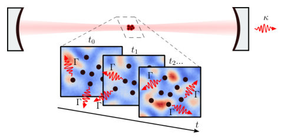
<figcaption class="paper-figure-caption"><b>Fig 1.</b> FIG. 1. Sketch of the experimental setup: a high-finesse op- tical cavity is coupled to a cloud of driven ultracold fermionic atoms. The light-matter interaction is disordered by an en- gineered, time-dependent speckle potential projected on the atomic ensemble, thus realizing a quantum chaotic many- body system. Two sources of decoherence disturb the unitary quantum dynamics: the cavity dissipation at a rate κ and the atomic spontaneous emission at a rate Γ.</figcaption>
</figure>
<figure class="paper-figure-card">

<figcaption class="paper-figure-caption"><b>Fig 2.</b> FIG. 2. (a-b) Averaged dynamics of ⟨ˆc† jˆcj⟩for N = 14 fermionic modes at half filling. We consider the cavity-fermion system described in Eq. (1) with (a) static disorder and (b) dynamical disorder [the f-RQC protocol in Eq. (3)], accounting for cavity dissipation at rate κ and spontaneous emission at rate Γ. (c-d) Comparison between the dissipative quantum trajectory averaged dynamics (orange curves), the single-trajectory averaged dynamics (light blue curves) and the effective dynamics generated by Eq. (2) with κ, Γ = 0 (black-dahsed curves) for (c) static disorder and (d) the f-RQC protocol, and for j = 4. As initial state we choose |Ψ(0)⟩= |1 ... 1 0 ... 0⟩. Parameters are fixed to...</figcaption>
</figure>
<figure class="paper-figure-card">

<figcaption class="paper-figure-caption"><b>Fig 3.</b> FIG. 3. Same as in Fig. 2 but for ∆cd/2π = 1 MHz. The drive amplitude has been increased to Ωd/2π = 38 MHz to match the same E in the simulations reported in Fig. 2. The number of fermionic modes is N = 12. Other parameters as in Fig. 2.</figcaption>
</figure>
<figure class="paper-figure-card">
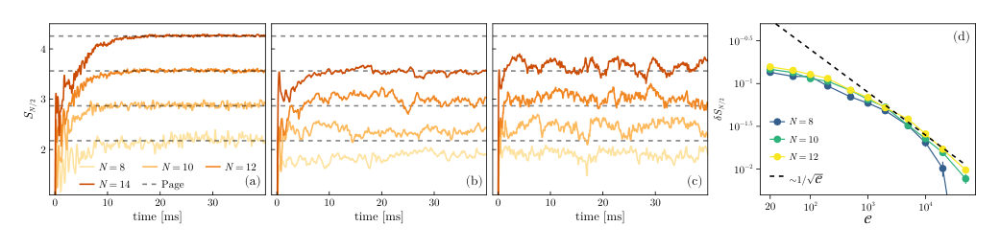
<figcaption class="paper-figure-caption"><b>Fig 4.</b> FIG. 4. Entanglement entropy dynamics for (a) the effective model in Eq. (2), (b-c) the full model in Eq. (1) with nonzero κ, Γ, for ∆cd = κ/2 and ∆cd = 5κ respectively. We consider the f-RQC protocol with n = 2N + 1. The gray-dashed line represent to the Page prediction for a U(1) symmetric system at half filling. Results are reported for N = 8, 10, 12, 14 fermionic modes at half filling (from light to dark orange) and are averaged over Ntraj = 100 trajectories [except N = 14 in panel (c), for which Ntraj = 20]. (d) Relative distance from Page entropy δSN/2 = |SN/2 −SPage|/SPage as a function of C for ∆cd = 2κ (Ωd/2π = 25 MHz) and different N. Data are averaged over Ntraj = 100...</figcaption>
</figure>
<figure class="paper-figure-card">
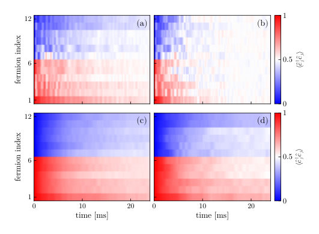
<figcaption class="paper-figure-caption"><b>Fig 5.</b> FIG. 6. Effects of the trap Hamiltonian for 171Yb atoms (first row) and 6Li atoms (second row) on the quantum many- body dynamics. The first column refers to the static disorder configuration. The second column to the f-RQC protocol. All the parameters are fixed as in Fig. 2.</figcaption>
</figure>
</div>

<p><strong>Summary.</strong> The paper investigates controlling quantum chaos in dissipative cavity QED systems using ultracold fermions. It critically distinguishes the effects of two decoherence sources—cavity loss versus spontaneous emission—showing they affect system diagnostics differently. The findings provide quantitative guidelines on how to engineer experiments to observe true many-body chaotic dynamics despite environmental noise.</p>
<p><strong>Why it may be interesting.</strong> This work is highly relevant as it tackles the crucial issue of decoherence in quantum simulation platforms. By distinguishing between different types of dissipation, it provides a roadmap for designing experiments that can isolate and measure genuine many-body chaotic signatures despite environmental coupling.</p>
<details>
<summary>Detailed structure</summary>
<p><strong>Main problem.</strong> The study investigates how many-body quantum chaos manifests and can be controlled within an open, dissipative optical cavity Quantum Electrodynamics (QED) platform.</p>
<p><strong>Main result.</strong> The two primary dissipation sources—cavity loss and spontaneous emission—have fundamentally different structures; specifically, spontaneous emission erases signatures of underlying Hamiltonian dynamics that are preserved by cavity loss alone.</p>
<p><strong>Method.</strong> The authors employ Monte Carlo stochastic quantum trajectories to simulate the driven-dissipative dynamics, comparing results against effective unitary evolution and analyzing observables like entanglement entropy.</p>
<p><strong>Model / system.</strong> The system is a cavity QED setup involving ultracold fermions interacting via photon-mediated long-range interactions. The dynamics are governed by an open quantum system description incorporating Lindblad jump operators for both cavity loss ($\kappa$) and atomic spontaneous emission ($\Gamma$).</p>
<p><strong>Key observables.</strong> Fermionic population $\langle \hat{c}^\dagger_j \hat{c}_j 
angle$, Entanglement Entropy ($S_{N/2}$), Out-of-Time-Ordered Correlators (OTOCs), and the cavity photon number $\langle \hat{a}^\dagger\hat{a} 
angle$.</p>
<p><strong>Important parameters / regimes.</strong> Cooperativity ($C$), detuning ($\Delta_{cd}$), Lamb-Dicke parameter ($\eta$), and dissipation rates ($\kappa, \Gamma$).</p>
<p><strong>Assumptions / limitations.</strong> The analysis relies on the dispersive approximation for cavity coupling and assumes experimentally realistic parameters to derive quantitative constraints.</p>
<p><strong>Figures summary.</strong> Figures illustrate the setup showing both decoherence sources; dynamics plots compare single-trajectory vs. averaged evolution under different dissipation regimes; and entropy/correlation functions are shown relative to theoretical bounds like the Page bound.</p>
<p><strong>Paper structure.</strong> The paper establishes the physical model (Cavity QED with disorder), details the two distinct dissipation mechanisms, analyzes how these mechanisms affect diagnostic observables (e.g., $\langle \hat{c}^\dagger_j \hat{c}_j 
angle$ and $S_{N/2}$), and concludes by deriving quantitative constraints for observing chaos.</p>
</details>
<details>
<summary>Abstract</summary>
<p>Cavity quantum electrodynamics (QED) with ultracold fermions provides a promising platform for realizing many-body quantum chaos through disordered, photon-mediated long-range interactions. Such setups are inherently open and are therefore subject to dissipation arising from cavity photon loss and atomic spontaneous emission. In this article, we study the driven-dissipative dynamics of a typical cavity QED setting including controllable disorder and long-range interactions. We find that the two dissipation sources have qualitatively different structures. Cavity loss reduces to a single dephasing channel, whereas spontaneous emission in the experimentally relevant regime generates a collection of nonlocal dephasing channels. Cavity-induced dephasing preserves signatures distinguishing integrable from chaotic Hamiltonian dynamics in observables that depend linearly on the density matrix, while spontaneous emission suppresses these signatures. By contrast, quantities that probe the structure of the many-body state, such as the entanglement entropy, are strongly affected by both dissipation mechanisms. Assuming experimentally realistic parameters, we derive quantitative constraints for the observation and control of many-body quantum chaos in cavity-QED platforms.</p>
</details>
<p><sub><a href="#top">↑ back to top</a></sub></p>

<p><a id="paper-2607.04040"></a></p>
<h3 id="quantum-simulation-of-gauge-theories-on-dynamical-spacetimes-via-floquet-induced-matrix-models">⭐ <a href="http://arxiv.org/abs/2607.04040v1">Quantum simulation of gauge theories on dynamical spacetimes via Floquet-induced matrix models</a></h3>
<p><strong>Highlighted author(s):</strong> Susanne F. Yelin<br>
<strong>Authors:</strong> Samuel Buckley-Bonanno, Noah Eckstein, Susanne F. Yelin<br>
<strong>Type:</strong> theory · <strong>Category:</strong> other · <strong>PDF:</strong> <a href="https://arxiv.org/pdf/2607.04040v1">https://arxiv.org/pdf/2607.04040v1</a><br>
<strong>Analysis basis:</strong> full PDF text, analyzed in chunks
<strong>Topic relevance:</strong> 🔥 <code>analog quantum simulation</code> <strong>4/5</strong> · 🔥 <code>non-equilibrium dynamics</code> <strong>4/5</strong> · <code>methods for driven-dissipative</code> <strong>3/5</strong> · <code>non-equilibrium universality</code> <strong>2/5</strong> · <code>Keldysh / 2PI / non-Gaussian methods</code> <strong>1/5</strong> · <code>driven-dissipative phase transition</code> <strong>1/5</strong> · <code>entanglement &amp; information structure</code> <strong>1/5</strong></p>
<div class="figure-strip-hint">↔ Scroll figures horizontally</div>
<div class="paper-figures-scroll">
<figure class="paper-figure-card">

<figcaption class="paper-figure-caption"><b>Fig 1.</b> FIG. 1. Matrix model quantum simulation procedure. (a) Given a specification of bosonic fields on a spacetime, there is an associated matrix state that encodes their Lagrangian. The fields can be scalar or Yang-Mills or other gauge fields, and the background spacetime can be curved and time-dependent. (b) The construction of the associated matrix state proceeds from these parameters. The spacetime geometry is encoded first by selecting a set of Hermitian operators whose dynamical Lie algebra maps in the commutative limit to the desired manifold. Field symmetries are then introduced to the set of matrices: U(n) non-commutative Yang-Mills fields are formed with a direct sum of n copies of the...</figcaption>
</figure>
<figure class="paper-figure-card">

<figcaption class="paper-figure-caption"><b>Fig 2.</b> FIG. 2. Displacement plots of non-commutative ge- ometries. Elementary manifolds can be encoded as non- commutative geometries in terms of matrix representations. We show cross-sections for spherical, flat and hyperbolic ge- ometries. For the non-commutative sphere, we use high- dimensional representations of SU(2) angular momentum op- erators; the non-commutative plane is constructed from fi- nite matrix representations of the canonical position ˆx and momentum ˆp operators via a Jordan-Schwinger construction; and Lorentzian spacetimes with hyperbolic geometry are en- coded using operators drawn from the SO(4, 2) Lie alge- bra. The middle and right columns depict the displacements d2(⃗x) =...</figcaption>
</figure>
<figure class="paper-figure-card">
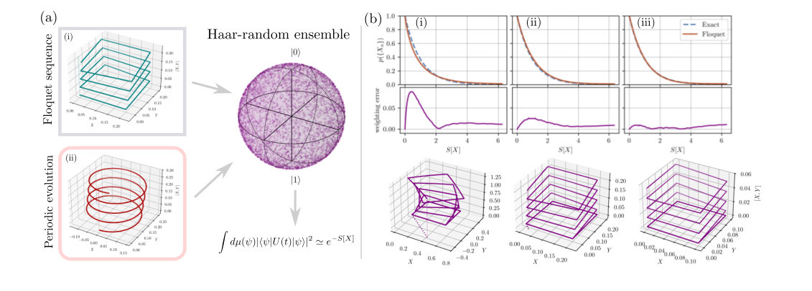
<figcaption class="paper-figure-caption"><b>Fig 3.</b> FIG. 3. Comparison of fidelities and the matrix model partition function. (a) For a single matrix state {Xa}, a periodic Floquet sequence is applied over the matrix operators. Plots (i) and (ii) show the resulting unitary evolution in operator space for Trotterized and uniform periodic driving, respectively. The axes denote coefficients in the effective Hamiltonian expansion during the evolution. The leading-order terms are commutators of the alternating operators Xa and Xb. When applied to a Haar-random ensemble of states, the fidelity fall-off in the high-frequency limit scales as exp(−tr(H2)), and for sequences over multiple operator pairs reproduces the Euclidean matrix-model action...</figcaption>
</figure>
<figure class="paper-figure-card">

<figcaption class="paper-figure-caption"><b>Fig 4.</b> FIG. 4. Globally controlled quantum circuit and path-integral comparison. (a) Diagram of the parallel quantum circuit for sampling from the matrix path integral, as detailed in Appendix D. The Floquet sequence F2 for each matrix state {Xa} in the ensemble is conditioned on a specific element of the entangled control-qubit basis |B⟩. (b) Sample of 1000 paths through the space of effective Hamiltonians over one cycle of F2({Xa}n; ∆t) for a Gaussian distribution of perturbations. In this illustrative example, the perturbed matrix state is a 2 × 2 representation of the non-commutative sphere, given by the Pauli matrices. The distribution of path endpoints is shown, with the unperturbed endpoint...</figcaption>
</figure>
<figure class="paper-figure-card">
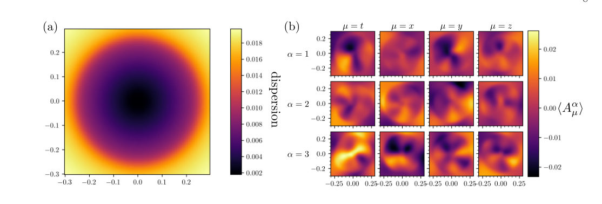
<figcaption class="paper-figure-caption"><b>Fig 5.</b> FIG. 5. SU(2) gauge-field observables on an expanding spacetime. Results from a Monte-Carlo simulation of a matrix state encoding an SU(2) gauge field on a k = −1 Friedmann-Lemaˆıtre-Robertson-Walker background. (a) Dispersion map ∆2( ⇀x) on a constant-time spatial slice, showing where the matrix state provides a good semiclassical representation of spacetime. The simulation uses eight 500 × 500 Hermitian matrices representing the four spacetime coordinates and their conjugate momenta. Low dispersion is confined to a finite region, reflecting the finite eigenvalue range of the matrices. By varying the time coordinate used to construct the quasi-coherent states | ⇀x⟩, the evolution of the...</figcaption>
</figure>
</div>

<p><strong>Summary.</strong> This work introduces a powerful quantum simulation method using Floquet engineering applied to large-$N$ matrix models. It overcomes the limitations of lattice methods by encoding spacetime geometry into matrix commutation relations, allowing the study of gauge theories on dynamical backgrounds. The core achievement is establishing that the measurable average fidelity directly yields the Euclidean path integral weight.</p>
<p><strong>Why it may be interesting.</strong> The use of quantum simulation techniques (Floquet engineering) to probe fundamental field theory concepts like path integrals and confinement transitions in a background-independent manner is highly relevant for AMO physicists exploring open quantum systems dynamics.</p>
<details>
<summary>Detailed structure</summary>
<p><strong>Main problem.</strong> The primary challenge is simulating quantum gauge theories on dynamical, curved spacetimes, which conventional lattice methods cannot handle due to their requirement for fixed backgrounds.</p>
<p><strong>Main result.</strong> The authors demonstrate a novel Floquet framework where the average fidelity of evolved random states directly reproduces the Euclidean path integral weight of Yang-Mills matrix models. This allows simulating dynamics on geometries that preserve continuous symmetries and unitarity.</p>
<p><strong>Method.</strong> They map gauge theories onto large-$N$ Hermitian matrix models, which are then simulated using periodic quantum driving (Floquet engineering) applied to Haar-random states.</p>
<p><strong>Model / system.</strong> The system is based on Yang-Mills matrix models $\{X_a\}$, where spacetime geometry and gauge fields are encoded in the commutation relations of these matrices. The framework is designed to handle dynamical backgrounds like expanding cosmological spacetimes (FLRW metrics).</p>
<p><strong>Key observables.</strong> Euclidean path integral weights, Wilson-loop expectation values (for confinement diagnostics), and the ensemble-averaged fidelity ($\langle f 
angle$) measured via randomized benchmarking.</p>
<p><strong>Important parameters / regimes.</strong> The coupling constant ($g$), matrix dimension ($N$), and the time step/driving frequency ($\Delta t$ or $\omega$).</p>
<p><strong>Assumptions / limitations.</strong> The method relies on approximating the path integral weight using the leading-order expansion of the average fidelity from the Floquet evolution, which is valid under high-frequency driving.</p>
<p><strong>Figures summary.</strong> Figures illustrate the quantum simulation procedure mapping fields to matrix states and measuring fidelity via periodic sequences; displacement plots show how low-displacement regions reveal underlying classical manifolds (e.g., sphere, plane); and comparison plots validate that measured fidelities match expected Euclidean weights.</p>
<p><strong>Paper structure.</strong> The paper establishes the problem by noting lattice limitations, introduces the matrix model formalism encoding geometry in commutators, details the Floquet simulation protocol linking fidelity to path integrals, validates this link using specific gauge theories (SU(2)), and concludes with demonstrations on both flat and expanding cosmological backgrounds.</p>
</details>
<details>
<summary>Abstract</summary>
<p>Quantum simulations of gauge theories are typically built on spatial lattices, an approach that has enabled major progress at the cost of requiring fixed background geometries and obscuring the treatment of curved and dynamical spacetimes. Large-$N$ matrix models offer an alternative, encoding spacetime geometry and gauge fields in the commutation structure of a set of Hermitian matrices, with the classical continuum emerging smoothly at large matrix dimensions. Here we introduce a Floquet framework that makes these models directly accessible to programmable quantum platforms. We show that Euclidean path integral weights of a Yang-Mills matrix models are reproduced, at leading order in the coupling, by the ensemble-averaged fidelities of Haar-random states evolved under periodic sequences of matrix operators. The observables for the simulated matrix model can then be accessed through established randomized benchmarking protocols in terms of the Loschmidt echo. The encoding requires exponentially fewer qubits than canonically quantized approaches. Numerically, we validate the fidelity-weight correspondence, demonstrate parallelized quantum circuits that sample the path-integral measure, and identify the deconfinement transition of an $SU(2)$ gauge field on both flat and expanding cosmological backgrounds. By avoiding a fixed spacetime lattice, the framework preserves continuous symmetries and unitarity on dynamical geometries, opening quantum simulation to field and spacetime dynamics beyond the reach of conventional lattice methods.</p>
</details>
<p><sub><a href="#top">↑ back to top</a></sub></p>

<p><a id="paper-2607.05343"></a></p>
<h3 id="quantum-computational-resources-and-conformal-field-theory-unifying-spins-bosons-and-fermions">⭐ <a href="http://arxiv.org/abs/2607.05343v1">Quantum Computational Resources and Conformal Field Theory: Unifying Spins, Bosons, and Fermions</a></h3>
<p><strong>Highlighted author(s):</strong> Yuto Ashida<br>
<strong>Authors:</strong> Ryota Matsuda, Masahiro Hoshino, Yuto Ashida<br>
<strong>Type:</strong> theory · <strong>Category:</strong> statistical mechanics · <strong>PDF:</strong> <a href="https://arxiv.org/pdf/2607.05343v1">https://arxiv.org/pdf/2607.05343v1</a><br>
<strong>Analysis basis:</strong> full PDF text, analyzed in chunks
<strong>Topic relevance:</strong> 🔥 <code>entanglement &amp; information structure</code> <strong>4/5</strong> · <code>analog quantum simulation</code> <strong>3/5</strong> · <code>non-equilibrium universality</code> <strong>2/5</strong> · <code>Keldysh / 2PI / non-Gaussian methods</code> <strong>1/5</strong> · <code>correlated / nonlocal dissipation</code> <strong>1/5</strong> · <code>driven-dissipative phase transition</code> <strong>1/5</strong> · <code>methods for driven-dissipative</code> <strong>1/5</strong> · <code>non-equilibrium dynamics</code> <strong>1/5</strong></p>
<div class="figure-strip-hint">↔ Scroll figures horizontally</div>
<div class="paper-figures-scroll">
<figure class="paper-figure-card">

<figcaption class="paper-figure-caption"><b>Fig 1.</b> FIG. 1. Summary of the main results. (a) Unified structure of the quantum computational resources for spins, bosons, and fermions. The MRE Mn with order n is constructed by a convolution unitary in all cases. In spins with a local Hilbert-space dimension d, the MRE reduces to the SRE, a measure of nonstabilizerness. In bosons and fermions, the MRE quantifies non- Gaussianity. In one-dimensional critical systems, the MRE can exhibit the same universal behavior across all cases, where a size-independent term sn is determined by the g factor of the infrared boundary condition in the replicated theory. (b) Upper panel: Universal behavior of non-Gaussianity of interacting fermions described by...</figcaption>
</figure>
<figure class="paper-figure-card">

<figcaption class="paper-figure-caption"><b>Fig 2.</b> FIG. 2. Schematic illustration of quantum convolution. The replica-mixing unitary U is applied to n copies of the many- body state, after which replicas 2, 3, . . . , n are traced out. The unitary U generates correlations among the replicas only for resourceful states, so that the output replica left after the partial trace becomes mixed. The MRE detects the magic by measuring the purity of the resulting convolved state.</figcaption>
</figure>
<figure class="paper-figure-card">

<figcaption class="paper-figure-caption"><b>Fig 3.</b> FIG. 3. Folding representations of the thermal partition func- tion and the purity numerator. The upper panel (a) shows the ordinary thermal path integral (left) and its Liouville-space folded-strip representation (right) in Eq. (77). The lower panel (b) shows the corresponding purity geometry and its second folding into the two-replica Liouville-space expression in Eq. (80).</figcaption>
</figure>
<figure class="paper-figure-card">

<figcaption class="paper-figure-caption"><b>Fig 4.</b> FIG. 4. Euclidean path-integral representation of the MRE in Eq. (86). (a) Folded theory with 2n sheets of size L × β/2. (b) 4n-sheet replicated theory obtained after an additional folding. In both panels, the spatial direction is abbreviated for simplicity. (c) Two interpretations of the MRE. The upper panel describes the rotated-boundary picture. While the bulk theory H consists of the product of each decoupled replica, an application of the convolution unitary to the edge leads to the rotated boundary state |J rot⟩⟩= U †|J ⟩⟩. The lower panel describes the rotated-bulk picture. The convolution unitary is applied to the bulk and leads to the rotated bulk Hamiltonian Hrot = UHU † with...</figcaption>
</figure>
<figure class="paper-figure-card">

<figcaption class="paper-figure-caption"><b>Fig 5.</b> FIG. 6. The universal constant term s for 1/2 &lt; K &lt; 2 against |γ| = |K −1|/|K +1|, which is invariant under the du- ality transformation K ↔K−1. The data points are obtained by fitting the numerical data of M to the scaling form (165) with L = 10, 12, 14 (L0 = 12).</figcaption>
</figure>
</div>

<p><strong>Summary.</strong> This paper introduces the magic Rényi entropy (MRE) as a unified resource measure applicable to spins, bosons, and fermions. Using Conformal Field Theory, the authors show that this MRE quantifies universal aspects of non-classicality in critical states. The work provides theoretical predictions for boundary phase transitions in systems like the Tomonaga-Luttinger liquid.</p>
<p><strong>Why it may be interesting.</strong> It connects abstract concepts from quantum information theory (computational resources) directly to measurable physical properties (boundary entropy, critical exponents) in strongly correlated 1D systems, providing a powerful diagnostic tool for many-body physics.</p>
<details>
<summary>Detailed structure</summary>
<p><strong>Main problem.</strong> The goal is to establish a unified theoretical framework for characterizing quantum computational resources, termed 'magic,' across diverse microscopic systems: spins, bosons, and fermions.</p>
<p><strong>Main result.</strong> A unified measure, the magic Rényi entropy (MRE), was introduced whose universal contribution is determined by the Affleck-Ludwig boundary entropy. The analysis predicts specific boundary phase transitions in critical fermionic systems.</p>
<p><strong>Method.</strong> The authors employ an information-theoretic approach using Conformal Field Theory (CFT) to analyze the MRE, which unifies measures like stabilizer Rényi entropy and non-Gaussianity.</p>
<p><strong>Model / system.</strong> The work analyzes many-body quantum states in one dimension, focusing on critical systems exemplified by the Tomonaga-Luttinger liquid (TLL) for interacting spinless fermions. The framework is generalized from qubit stabilizers to encompass bosonic and fermionic degrees of freedom.</p>
<p><strong>Key observables.</strong> Magic Rényi entropy (MRE), nonstabilizerness, non-Gaussianity, Affleck-Ludwig boundary entropy.</p>
<p><strong>Important parameters / regimes.</strong> Luttinger parameter K, the mixing angle $\zeta$, and the system size $L$.</p>
<p><strong>Assumptions / limitations.</strong> The core assumption is that nonstabilizerness and non-Gaussianity share a common mathematical structure allowing for the unified MRE measure. The analysis heavily relies on CFT techniques.</p>
<p><strong>Figures summary.</strong> Figure 1 summarizes the unified MRE construction across spin, boson, and fermion systems, showing universal behavior determined by boundary entropy; another plot details predicted non-Gaussianity transitions in TLL fermions versus a parameter $\gamma$.</p>
<p><strong>Paper structure.</strong> The paper develops the mathematical definition of MRE using convolution unitary techniques, applies CFT to derive its universal scaling laws related to boundary entropy, and then provides concrete applications, such as analyzing phase transitions in TLL fermions.</p>
</details>
<details>
<summary>Abstract</summary>
<p>Characterizing a quantum state through the lens of quantum resources provides an information-theoretic perspective on many-body systems. While quantum entanglement serves as the paradigmatic example of a quantum resource, recent studies have shown that quantum magic, a resource for universal quantum computation, can capture aspects of many-body states complementary to those described by entanglement. For instance, in spin systems, conformal field theory (CFT) analysis of the stabilizer Rényi entropy has revealed universal features of nonstabilizerness that are qualitatively distinct from entanglement. In bosonic and fermionic systems, however, a comparable formulation for their computational resource, non-Gaussianity, has yet to be established. In this work, we introduce a unified measure, the magic Rényi entropy (MRE), to quantify computational resources in spins, bosons, and fermions on an equal footing. This allows us to reveal common universal aspects of nonstabilizerness and non-Gaussianity in critical many-body states. In particular, our CFT analysis shows that the universal contribution to the MRE appears as the size-independent term determined by the Affleck-Ludwig boundary entropy. We find that non-Gaussianity can continuously renormalize this universal contribution or drive a boundary phase transition through bulk-induced boundary renormalization-group flows. As a concrete demonstration, we present a detailed CFT analysis of non-Gaussianity in interacting spinless fermions described by the Tomonaga-Luttinger liquid, showing boundary transitions at the Luttinger parameters $K=1/3$ and $K=3$. We perform numerical calculations that confirm our field-theoretical predictions. These results provide a unified field-theoretical understanding of many-body magic across spins, bosons, and fermions.</p>
</details>
<p><sub><a href="#top">↑ back to top</a></sub></p>

<p><a id="paper-2607.04279"></a></p>
<h3 id="weak-ergodicity-breaking-without-nonthermal-eigenstates"><a href="http://arxiv.org/abs/2607.04279v1">Weak ergodicity breaking without nonthermal eigenstates</a></h3>
<p><strong>Authors:</strong> Boning Huang, Yongguan Ke, Li Zhang, Lin Ling, Chaohong Lee<br>
<strong>Type:</strong> theory · <strong>Category:</strong> other · <strong>PDF:</strong> <a href="https://arxiv.org/pdf/2607.04279v1">https://arxiv.org/pdf/2607.04279v1</a><br>
<strong>Analysis basis:</strong> full PDF text, analyzed in chunks
<strong>Topic relevance:</strong> 🔥 <code>scars &amp; prethermalization</code> <strong>5/5</strong> · 🔥 <code>analog quantum simulation</code> <strong>4/5</strong> · 🔥 <code>non-equilibrium dynamics</code> <strong>4/5</strong> · <code>entanglement &amp; information structure</code> <strong>3/5</strong> · <code>non-equilibrium universality</code> <strong>3/5</strong> · <code>driven-dissipative phase transition</code> <strong>2/5</strong> · <code>methods for driven-dissipative</code> <strong>2/5</strong> · <code>Frenkel-Kontorova</code> <strong>1/5</strong> · <code>Keldysh / 2PI / non-Gaussian methods</code> <strong>1/5</strong> · <code>correlated / nonlocal dissipation</code> <strong>1/5</strong></p>
<div class="figure-strip-hint">↔ Scroll figures horizontally</div>
<div class="paper-figures-scroll">
<figure class="paper-figure-card">
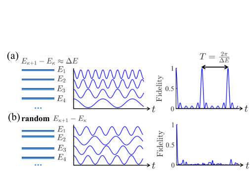
<figcaption class="paper-figure-caption"><b>Fig 1.</b> FIG. 1. Schematics of (a) equally spaced energy levels in a linear band, which contribute to multiple frequencies and lead to periodic revival dynamics, and (b) random energy levels in a curved band, which contribute to random frequencies and lead to thermalization dynamics.</figcaption>
</figure>
<figure class="paper-figure-card">

<figcaption class="paper-figure-caption"><b>Fig 2.</b> FIG. 2. (a) Three-particle Bloch bands. (b) Appearance of nearly linear sub-bands (blue solid lines), folded from the highest dimer-monomer band in the original simple lattice (black dashed line). (c) Level statistics of the superlattice Bose-Hubbard model with weak onsite disorders (blue dots). Red dashed and green dashed lines denote Poisson distribu- tion and Wigner-Dyson distribution, respectively. (d) Expec- tation values of ˆnj=15 (black) and ˆni=12ˆnj=15 (blue) of dimer- monomer eigenstates as a function of energy. Here i and j can be chosen as other sites, without changing physical picture. Values associated with a nearly linear band are highlighted by the red shaded region....</figcaption>
</figure>
<figure class="paper-figure-card">
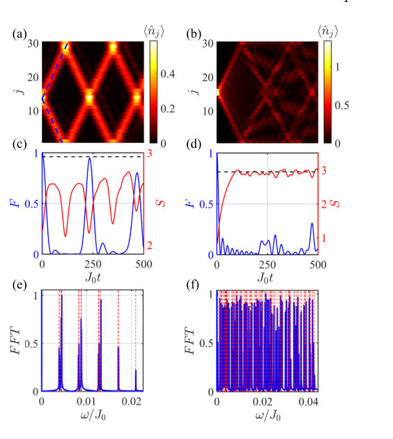
<figcaption class="paper-figure-caption"><b>Fig 3.</b> FIG. 3. Dynamics of multiparticle Wannier states in different lattices: the superlattice (left panel) and the simple lattice (right panel). (a, b) Time-evolution of density distribution. Blue lines in (a) denote the mean displacement predicted by the group velocities of the nearly linear band. (c, d) Time- evolution of fidelity (blue) and entanglement entropy (red). Black dashed lines in (c) and (d) denote the Page value. (e, f) Normalized fast Fourier transform (FFT) spectrum of fidelity in long-time dynamics. Vertical dashed red lines denote the frequencies given by the energy gaps in corresponding band. δU = 0.01(δU = 0) is chosen for superlattice (simple) lattice, while the other...</figcaption>
</figure>
<figure class="paper-figure-card">
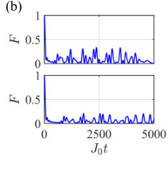
<figcaption class="paper-figure-caption"><b>Fig 4.</b> FIG. 4. Time-evolution of fidelity in (a) the nearly linear dimer-monomer band and (b) curved highest dimer-monomer band for different system sizes: M = 60 (top panel) and M = 90 (bottom panel). Other parameters are the same as those in Figs. 3(a, c).</figcaption>
</figure>
</div>

<p><strong>Summary.</strong> The paper proposes a novel mechanism for weak ergodicity breaking in Bose-Hubbard lattices by exploiting spatially periodic modulation. This modulation folds the energy bands into nearly linear sub-bands, causing long-lived revivals of particle states due to spectral phase coherence among thermalizing eigenstates. This offers an alternative route to quantum memory effects that bypasses the need for non-thermalized or scar-like eigenstates.</p>
<p><strong>Why it may be interesting.</strong> This work provides a clean theoretical pathway to observing long-lived quantum memory effects in interacting many-body systems using controllable lattice engineering (modulation), which is highly relevant for simulating complex quantum dynamics in cold atom setups.</p>
<details>
<summary>Detailed structure</summary>
<p><strong>Main problem.</strong> To identify a mechanism for weak ergodicity breaking that operates without relying on nonthermal eigenstates, contrasting with established mechanisms like MBL or QMS.</p>
<p><strong>Main result.</strong> The authors show that periodic revivals can occur due to spectral phase coherence among ETH-satisfying eigenstates when the system's energy bands are folded into nearly linear sub-bands via spatially periodic modulation.</p>
<p><strong>Method.</strong> Theoretical analysis involving calculating time evolution of expectation values and fidelity, coupled with diagnosing band structure properties (e.g., level spacing statistics).</p>
<p><strong>Model / system.</strong> The study uses a Bose-Hubbard lattice subjected to spatially periodic modulation, which creates a superlattice structure. The Hamiltonian is modulated by site-dependent interaction terms ($U_j$), leading to the folding and separation of energy bands.</p>
<p><strong>Key observables.</strong> Fidelity decay, particle-partition entanglement entropy, density distribution $\langle \hat{n}_j(t) 
angle$, and spectral analysis (FFT).</p>
<p><strong>Important parameters / regimes.</strong> The modulation strength ($\delta U$) is crucial for inducing the nearly linear sub-bands; the system size ($M$) and lattice period ($d$) are key parameters.</p>
<p><strong>Assumptions / limitations.</strong> The mechanism relies on engineering nearly linear multiparticle sub-bands via periodic modulation, which leads to quasi-equally spaced energy levels.</p>
<p><strong>Figures summary.</strong> Figures compare time evolution in simple (curved band) vs. superlattice (nearly linear band) settings, showing revivals only in the modulated case; level statistics confirm the spectral structure.</p>
<p><strong>Paper structure.</strong> The paper systematically develops the concept by first establishing the model and identifying the role of modulation in creating quasi-linear bands. It then uses time evolution diagnostics (fidelity, entanglement) to prove that coherent revivals arise from phase coherence rather than non-thermal states, extending this proof across different particle sectors.</p>
</details>
<details>
<summary>Abstract</summary>
<p>The typical mechanisms of ergodicity breaking in isolated interacting quantum systems, such as many-body localization and quantum many-body scars, originate from the nonthermal nature of the underlying eigenstates. Here, in the absence of nonthermal eigenstates, we identify a mechanism for collective revivals of multiparticle Wannier states (MWSs) associated with nearly linear bands in a spatially modulated Bose-Hubbard lattice. The MWSs, as superpositions of multiparticle Bloch states within individual energy bands, give rise to band-resolved Wannier-sector fragmentation. The key idea is that spatially periodic modulation folds and separates energy bands of a simple lattice into several sub-bands, among which nearly linear sub-bands inherit the linear segments of the original bands. Although multiparticle Bloch states satisfy the eigenstate thermalization hypothesis (ETH), the MWSs in the nearly linear band still exhibit long-lived collective revivals, due to emergent equally spaced energy levels. Our work provides a route to weak ergodicity breaking in which long-lived revivals arise from spectral phase coherence among ETH-satisfying eigenstates rather than from scar-like nonthermal eigenstates.</p>
</details>
<p><sub><a href="#top">↑ back to top</a></sub></p>

<p><a id="paper-2607.04268"></a></p>
<h3 id="entanglement-of-excited-states-after-measurements-in-conformal-field-theory"><a href="http://arxiv.org/abs/2607.04268v1">Entanglement of excited states after measurements in conformal field theory</a></h3>
<p><strong>Authors:</strong> Hui-Huang Chen<br>
<strong>Type:</strong> theory · <strong>Category:</strong> statistical mechanics · <strong>PDF:</strong> <a href="https://arxiv.org/pdf/2607.04268v1">https://arxiv.org/pdf/2607.04268v1</a><br>
<strong>Analysis basis:</strong> full PDF text, analyzed in chunks
<strong>Topic relevance:</strong> 🔥 <code>measurement-induced transitions</code> <strong>5/5</strong> · 🔥 <code>entanglement &amp; information structure</code> <strong>4/5</strong> · 🔥 <code>non-equilibrium dynamics</code> <strong>4/5</strong> · <code>non-equilibrium universality</code> <strong>3/5</strong> · <code>quantum measurements</code> <strong>3/5</strong> · <code>Keldysh / 2PI / non-Gaussian methods</code> <strong>1/5</strong> · <code>analog quantum simulation</code> <strong>1/5</strong> · <code>correlated / nonlocal dissipation</code> <strong>1/5</strong> · <code>driven-dissipative phase transition</code> <strong>1/5</strong> · <code>methods for driven-dissipative</code> <strong>1/5</strong></p>
<div class="figure-strip-hint">↔ Scroll figures horizontally</div>
<div class="paper-figures-scroll">
<figure class="paper-figure-card">

<figcaption class="paper-figure-caption"><b>Fig 1.</b> Figure 1: Numerical check of the post-measurement current-excitation ratios in the XX chain. The system size is L = 500. The measured interval has length (a) s = 50, corresponding to s/L = 0.1, and (b) s = 200, corresponding to s/L = 0.4. The horizontal axis is x = l/L. Symbols denote lattice results obtained from the conditional free-fermion correlation matrix after projecting the measured sites onto a fixed alternating occupation pattern. Solid curves are the CFT predictions for F (2) J (cf. Eq. (4.21)) and F (3) J (cf. Eq. (4.27)). The agreements in both panels support the current hafnian formulas on the post-measurement slit geometry.</figcaption>
</figure>
<figure class="paper-figure-card">
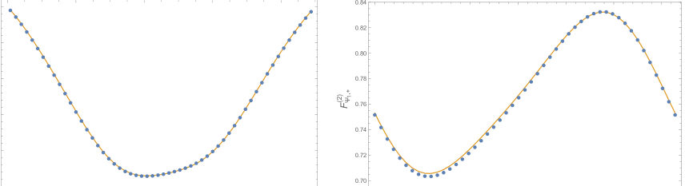
<figcaption class="paper-figure-caption"><b>Fig 2.</b> Figure 2: Numerical check of the post-measurement second R´enyi ratio for the J/ ¯J superposition state. Symbols denote XX-chain results obtained from the multi-Slater determinant calculation after projecting the measured sites onto a fixed alternating occupation pattern. Solid curves are the CFT predictions from the disk four-current formula. The left panel tests the dependence on the subsystem size x = l/L, while the right panel tests the relative phase dependence. The agreement in both panels verifies the coherent left-right interference terms induced by the measurement boundary.</figcaption>
</figure>
<figure class="paper-figure-card">
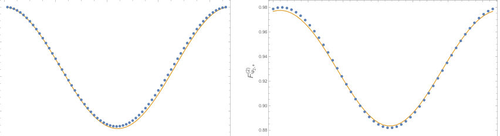
<figcaption class="paper-figure-caption"><b>Fig 3.</b> Figure 3: Numerical check of the conjugate-vertex superposition. The blue points are the XX- chain results, and the orange curves are the CFT predictions. In the phase scan, the CFT curve is evaluated using the branch-matched phase θCFT = θlat −πl/L + πs/(4L). The agreement shows that the CFT expression captures both the spatial dependence and the phase-sensitive interference structure of the vertex superposition. The small residual deviations are attributed to finite-size corrections.</figcaption>
</figure>
</div>

<p><strong>Summary.</strong> This paper develops a sophisticated CFT framework to calculate the entanglement entropy of excited states after a projective measurement on a spatial interval. By mapping complex geometries and utilizing replica techniques, it derives explicit formulas showing how phase-sensitive interference terms appear in post-measurement observables for specific excitations. The results are tested against predictions from the critical XX chain.</p>
<p><strong>Why it may be interesting.</strong> This work provides a rigorous theoretical framework for quantifying non-equilibrium entanglement in 1D quantum systems following measurement, which is highly relevant for understanding open quantum system dynamics beyond simple thermalization.</p>
<details>
<summary>Detailed structure</summary>
<p><strong>Main problem.</strong> The study focuses on calculating the entanglement entropy of low-energy excited states following a fixed-outcome projective measurement within a (1+1)-dimensional Conformal Field Theory (CFT). This extends standard ground-state analysis to non-equilibrium, post-selected quantum states.</p>
<p><strong>Main result.</strong> The paper derives formulas showing that while the ordinary-cylinder second Rényi ratio for conjugate vertex operators is phase-independent, the finite-slit post-measurement ratio exhibits crucial phase-sensitive interference terms. These predictions are tested using free-fermion models like the critical XX chain.</p>
<p><strong>Method.</strong> The analysis employs replica constructions and conformal field theory techniques, mapping complex geometries (like replicated slits) to simpler domains (disks) to express entanglement entropy as normalized boundary-CFT correlation functions.</p>
<p><strong>Model / system.</strong> The primary model is a (1+1)-dimensional CFT, specifically applied to the compact free boson CFT. The physical setup involves measuring an interval on a circle, which introduces a conformal boundary condition ('slit') into the system's description.</p>
<p><strong>Key observables.</strong> Post-measurement Rényi entropy ($S_n$), normalized boundary-CFT correlation functions ($F^{(n)}_{\Upsilon,a}$), and current hafnians for chiral excitations.</p>
<p><strong>Important parameters / regimes.</strong> The geometry is defined by parameters related to the slit size ($s$) and the system length ($L$). The analysis distinguishes between ground states and excited states ($\Upsilon$).</p>
<p><strong>Assumptions / limitations.</strong> It assumes that the fixed measurement outcome renormalizes to a conformal boundary condition, allowing the use of standard CFT machinery for calculating correlation functions.</p>
<p><strong>Figures summary.</strong> Not specified in detail, but the notes indicate derivations involving specific formulas (Eq. 2.10, Eq. 3.5) and comparisons between different excitation types (current vs. vertex operators).</p>
<p><strong>Paper structure.</strong> The paper systematically builds the framework by first addressing ground-state entanglement on a slit cylinder, then generalizing to excited states via operator insertions ($\Upsilon$). It applies this formalism to specific CFT examples (free boson, currents) and concludes with detailed numerical testing methods using the critical XX chain.</p>
</details>
<details>
<summary>Abstract</summary>
<p>We study the entanglement of low-energy excited states after a fixed-outcome projective measurement on a spatial interval in a (1+1)-dimensional conformal field theory (CFT). The post-selected measurement outcome is represented by a slit carrying a conformal boundary condition, while excited states are introduced by operator insertions in the Euclidean path integral. After mapping the replicated slit geometry to a disk, the excited-state contribution to the post-measurement Rényi entropy is expressed as a normalized boundary-CFT correlation function.   We apply this framework to the compact free boson CFT. For the chiral current excitation, the relevant ratios are given by current hafnians. We also study coherent superpositions of $J$ and $\bar J$, and of conjugate compact vertex operators. In the conjugate-vertex case, the ordinary-cylinder second Rényi ratio is independent of the relative phase, whereas the finite-slit post-measurement ratio contains phase-sensitive interference terms. Finally, we describe free-fermion and multi-Slater determinant methods for testing these predictions in the critical XX chain.</p>
</details>
<p><sub><a href="#top">↑ back to top</a></sub></p>

<p><a id="paper-2607.04991"></a></p>
<h3 id="quantum-hashing-via-constrained-rydberg-many-body-dynamics"><a href="http://arxiv.org/abs/2607.04991v1">Quantum Hashing via Constrained Rydberg Many-Body Dynamics</a></h3>
<p><strong>Authors:</strong> Han-Chao Chen, Xin Liu, Zheng-Yuan Zhang, Dong-Sheng Ding, Bao-Sen Shi<br>
<strong>Type:</strong> theory · <strong>Category:</strong> other · <strong>PDF:</strong> <a href="https://arxiv.org/pdf/2607.04991v1">https://arxiv.org/pdf/2607.04991v1</a><br>
<strong>Analysis basis:</strong> full PDF text, analyzed in chunks
<strong>Topic relevance:</strong> 🔥 <code>Rydberg arrays</code> <strong>5/5</strong> · 🔥 <code>analog quantum simulation</code> <strong>4/5</strong> · <code>entanglement &amp; information structure</code> <strong>2/5</strong> · <code>non-equilibrium dynamics</code> <strong>2/5</strong> · <code>correlated / nonlocal dissipation</code> <strong>1/5</strong> · <code>driven-dissipative phase transition</code> <strong>1/5</strong> · <code>methods for driven-dissipative</code> <strong>1/5</strong> · <code>quantum measurements</code> <strong>1/5</strong></p>
<div class="figure-strip-hint">↔ Scroll figures horizontally</div>
<div class="paper-figures-scroll">
<figure class="paper-figure-card">

<figcaption class="paper-figure-caption"><b>Fig 1.</b> FIG. 1. Quantum hashing protocol and information space structure. (a) Classical metric space. A pairwise Hamming distance matrix of ternary data arranged in Gray code. (b) One-dimensional Rydberg atom arrays and schematic diagram of the quantum hashing process. Ternary symbols {0, 1, 2} are mapped to the quantum hashing elementary evolution operator. Under the action of a sequence of length L, the initial state |ψ0⟩evolves into the final quantum hashing state |ψf⟩. (c) Reconstruction of ternary information space to Hilbert space. Each ternary string xi in the classical space X uniquely determines a deterministic dynamical trajectory, which is mapped to a single quantum hashing state...</figcaption>
</figure>
<figure class="paper-figure-card">
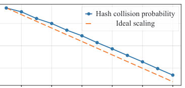
<figcaption class="paper-figure-caption"><b>Fig 2.</b> FIG. 2. Hashing collision probability. (a) Distribution of hashing collision probabilities obtained from Monte Carlo simulations with 104 samples for a system of N = 12 atoms. The corresponding average collision probability is calculated to be Pave = 0.048%. (b) Average hashing collision prob- ability as a function of the number of atoms N, with the vertical axis shown on a logarithmic scale. The blue solid line represents the collision probability obtained from numerical statistics, while the orange dashed line denotes the scaling behavior expected for an ideal hash function, Pcoll = 1/2N.</figcaption>
</figure>
<figure class="paper-figure-card">

<figcaption class="paper-figure-caption"><b>Fig 3.</b> FIG. 3. Cryptographic properties of quantum hashing. (a) Random Forest machine learning (ML) decoder success probability versus input length L. The blue scatter points represent the numerical data, while the purple solid line denotes the logistic function fitting curve Pfit = 1 1+exp[(L−Lc)/k]. The red dashed line indicates the baseline corresponding to random guessing by the decoder, and the blue dashed line marks the fitted critical length Lc. (b) Hamming distance between the decoded output string and the true input string as a function of the input length L. The red dashed line indicating the random guessing limit, K = 2L/3. (c) Distribution of decoding accuracy for each trit position in...</figcaption>
</figure>
</div>

<p><strong>Summary.</strong> The authors show that constrained quantum many-body dynamics in Rydberg atom arrays naturally implements a quantum hashing mechanism. By encoding classical data into the system's state evolution, the resulting quantum ensemble exhibits near-orthogonality and strong geometric separation. This demonstrates that complex cryptographic functions can emerge intrinsically from physical quantum dynamics itself.</p>
<p><strong>Why it may be interesting.</strong> This work directly connects fundamental concepts in AMO physics (Rydberg dynamics) to advanced information theory and cryptography, suggesting that complex computational functions can be realized purely by controlling physical interactions.</p>
<details>
<summary>Detailed structure</summary>
<p><strong>Main problem.</strong> To demonstrate that quantum hashing can emerge naturally from constrained many-body dynamics, rather than requiring deliberately engineered algorithms.</p>
<p><strong>Main result.</strong> The system exhibits essential cryptographic properties—including low collision probability and strong one-wayness—emerging intrinsically from the geometric structure induced by the dynamics.</p>
<p><strong>Method.</strong> Classical ternary strings are mapped onto deterministic quantum state trajectories in a Rydberg atom array, whose resulting ensemble is analyzed for its statistical and geometric properties.</p>
<p><strong>Model / system.</strong> The physical system modeled is an array of Rydberg atoms. The dynamics are governed by a time-dependent Hamiltonian involving blockade, pair antiblockade, and facilitation processes.</p>
<p><strong>Key observables.</strong> Collision probability (low), pairwise logarithmic fidelity matrix (showing separation), effective dimension ($D_{	ext{eff}}$), and ML decoder success probability (for one-wayness).</p>
<p><strong>Important parameters / regimes.</strong> System size ($N=12$ atoms), input length ($L$), and the Hamiltonian parameters ($\lambda_\mu(t)$).</p>
<p><strong>Assumptions / limitations.</strong> The protocol assumes the initial state is a product state, and that constrained many-body dynamics can serve as a physical realization for this information processing functionality.</p>
<p><strong>Figures summary.</strong> Figures illustrate the mapping from Hamming distance space to quantum fidelity space; they show low collision probability scaling with $N$, and comprehensive plots detail one-wayness decay, tamper sensitivity (avalanche effect), and privacy preservation.</p>
<p><strong>Paper structure.</strong> The paper establishes the physical model using Rydberg atoms, details the encoding of classical strings into quantum trajectories, analyzes the resulting geometric structure via fidelity measures, and finally quantifies cryptographic properties like collision resistance and one-wayness through simulations.</p>
</details>
<details>
<summary>Abstract</summary>
<p>In this Letter, we show that constrained many-body dynamics in Rydberg atom arrays naturally gives rise to a quantum hashing mechanism. By encoding ternary strings into deterministic trajectories in the state space, the classical information space is mapped onto a quantum state ensemble in the Hilbert space with an induced geometric structure. Statistical analysis reveals that this ensemble exhibits high probability near-orthogonality, random-like distribution, and broad geometric coverage. These geometric features naturally give rise to the essential cryptographic properties of quantum hashing, including low collision probability, one-wayness, tamper sensitivity, and privacy preservation. Our results demonstrate that the cryptographic functionality of quantum hashing need not rely on deliberately engineered algorithms, but can instead emerge naturally from constrained many-body dynamics, identifying quantum dynamics itself as a physical resource for cryptographic information processing.</p>
</details>
<p><sub><a href="#top">↑ back to top</a></sub></p>

<p><a id="paper-2607.05216"></a></p>
<h3 id="fast-pulses-for-high-fidelity-circularization-of-interacting-rydberg-atoms"><a href="http://arxiv.org/abs/2607.05216v1">Fast Pulses for High-Fidelity Circularization of Interacting Rydberg atoms</a></h3>
<p><strong>Authors:</strong> Matthias Hüls, Aurore A. Young, Clément Sayrin, Michel Brune, Jean-Michel Raimond, Tommaso Calarco, Felix Motzoi, Robert Zeier, Eloisa Cuestas<br>
<strong>Type:</strong> theory · <strong>Category:</strong> other · <strong>PDF:</strong> <a href="https://arxiv.org/pdf/2607.05216v1">https://arxiv.org/pdf/2607.05216v1</a><br>
<strong>Analysis basis:</strong> full PDF text, analyzed in chunks
<strong>Topic relevance:</strong> 🔥 <code>Rydberg arrays</code> <strong>5/5</strong> · 🔥 <code>analog quantum simulation</code> <strong>4/5</strong> · <code>non-equilibrium dynamics</code> <strong>2/5</strong> · <code>entanglement &amp; information structure</code> <strong>1/5</strong> · <code>methods for driven-dissipative</code> <strong>1/5</strong> · <code>quantum measurements</code> <strong>1/5</strong></p>
<div class="figure-strip-hint">↔ Scroll figures horizontally</div>
<div class="paper-figures-scroll">
<figure class="paper-figure-card">
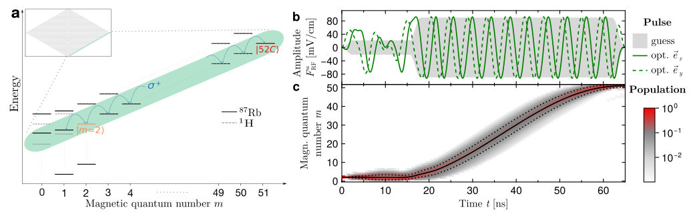
<figcaption class="paper-figure-caption"><b>Fig 1.</b> FIG. 1. (a) Rydberg levels of the n = 52 manifold of 1H (dashed gray lines) and 87Rb (solid black lines) in the presence of static electric and magnetic fields of magnitude E = 2.1 V cm−1 and B = 14 G. The eigenenergies ordered by their corresponding magnetic quantum number m reveal the diamond-like pattern depicted in the inset. For hydrogen the subspace of the energeti- cally lowest states with m ≥0 forms the lowest diagonal ladder (shaded turquoise) that includes the circular state |52C⟩(red). The lowest diagonal ladder is harmonic up to the dominant first order Stark shift with transitions m →m + 1 (blue arrows) of 229.2 MHz usually driven by a σ+ polarized RF field. The m = 0 and m = 1...</figcaption>
</figure>
<figure class="paper-figure-card">

<figcaption class="paper-figure-caption"><b>Fig 2.</b> FIG. 2. (a) A pair of Rydberg atoms with interatomic distance R and angle θ with respect to the static electric and magnetic fields E and B. (b) Angular momentum transfer for an interacting atom pair with R = 7 µm and θ = 0 under the action of the RF pulse optimized for the circulrization of a single atom shown in Fig. 1(b). The field magnitudes are set to E = 2.1 V cm−1</figcaption>
</figure>
<figure class="paper-figure-card">

<figcaption class="paper-figure-caption"><b>Fig 3.</b> FIG. 3. Main mechanism through which the interactions disturb the circularization. (a-b) Comparison between the RF pulse optimized for the circularization of a single atom (green) with a pulse optimized for the simultaneous circularization of a pair of atoms (orange) with R = 7 µm and θ = 0, targeting in both cases to an efficiency ptg = 99%. The static electric and magnetic field have magnitudes E = 2.1 V cm−1 and B = 14 G. Panel (a) depicts the x-component of both pulses (y-components exhibit similar behavior) while panel (b) shows the corresponding spectral analysis. The Fourier transform of the pulse optimized for the circularization of a single atom exhibits a dominant peak around the...</figcaption>
</figure>
<figure class="paper-figure-card">

<figcaption class="paper-figure-caption"><b>Fig 4.</b> FIG. 4. Analytical adaptation of the single-atom pulse to two interacting atoms. (a) Frequencies associated to the transitions supported by the lowest diagonal ladders for two non-interacting (green) and interacting (orange) hydrogenic atoms. (b) x− and y−components (solid and dashed orange curves, respectively) of the analytical adapted pulse Faa ad. freq. for interacting atoms obtained by incorporating into Fa Krotov (in green) a phase shift that counteracts the main effect of interactions, see Eq. (5.1). The resulting adapted pulse leads to pCC = 96.9 % for R = 7 µm and θ = 0. (c) Differences between the maximum achievable final circular pair probability of (ptg)2 = 98% and the one...</figcaption>
</figure>
<figure class="paper-figure-card">
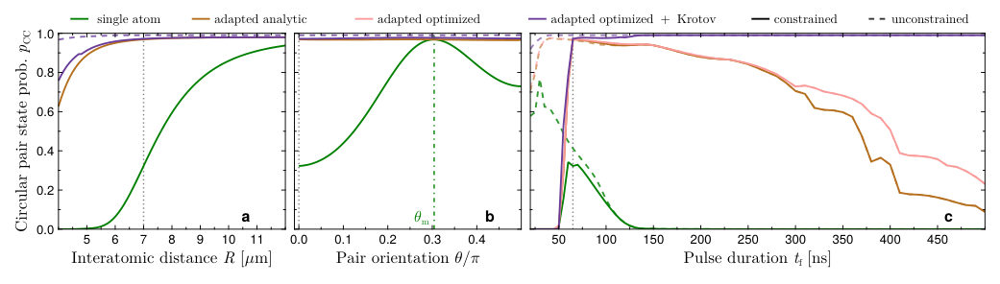
<figcaption class="paper-figure-caption"><b>Fig 5.</b> FIG. 5. Final circular pair state probability pCC obtained after the evolution of an atom pair under the action of different pulses (a) as a function of the interatomic distancde R for a fixed angle θ = 0 and pulse duration tf = 65 ns, (b) as a function of θ for a fixed R = 7 µm and tf = 65 ns, and (c) as a function of tf for fixed R = 7 µm and θ = 0. The dotted vertical lines in each panel indicate the value to which the corresponding parameter is fixed in the remaining panels. As expected, the optimized single-atom pulse of Fig. 1(b) (green) results in high values of pCC around θm and for large R. The optimized single-atom pulse is then adapted to the interactions as indicated by Eq....</figcaption>
</figure>
</div>

<p><strong>Summary.</strong> This paper tackles the challenge of rapidly preparing interacting Rydberg atoms into highly desirable circular states for quantum applications. The authors show that interactions degrade single-atom pulse efficiency, but they overcome this by analytically adapting the pulses to compensate for interaction-induced energy shifts. This paves the way for fast, high-fidelity control in realistic, interacting many-body systems.</p>
<p><strong>Why it may be interesting.</strong> This work directly addresses a critical technological hurdle in Rydberg quantum simulation by providing a robust theoretical framework to maintain high-fidelity control despite strong interatomic coupling effects.</p>
<details>
<summary>Detailed structure</summary>
<p><strong>Main problem.</strong> Circularization of interacting Rydberg atoms is a major bottleneck for quantum simulation and computation, as previous fast methods neglected crucial interatomic interactions.</p>
<p><strong>Main result.</strong> The authors developed an analytical method to adapt single-atom RF pulses by accounting for interaction-induced energy shifts, achieving high fidelity ($>95\%$) even for closely spaced interacting atoms.</p>
<p><strong>Method.</strong> The approach involves analytically deriving pulse adaptations based on the dominant disturbance—interaction-induced frequency shifts—and combining this with advanced control techniques like Krotov's algorithm.</p>
<p><strong>Model / system.</strong> The system consists of interacting Rydberg atoms (e.g., $^ {87}	ext{Rb}$ in the $n=52$ manifold) driven by time-dependent radio-frequency (RF) pulses under static electric and magnetic fields. The Hamiltonian includes terms for free evolution, external fields, and dipole-dipole interactions.</p>
<p><strong>Key observables.</strong> Final circular state probability ($p_C$), fidelity of preparation, and the expectation value of angular momentum $\langle\hat{L}_z
angle$.</p>
<p><strong>Important parameters / regimes.</strong> Interatomic distances down to $6.5 \mu	ext{m}$, RF pulse duration ($\sim 65$ ns), and target fidelities ($\ge 95\%$).</p>
<p><strong>Assumptions / limitations.</strong> The primary assumption is that the dominant disturbance from interactions can be captured by identifying and compensating for shifts in relevant transition energies.</p>
<p><strong>Figures summary.</strong> Figures illustrate Rydberg energy levels under static fields, optimized RF pulse components for single-atom circularization, population evolution showing angular momentum transfer, and schematics of interacting atom pairs.</p>
<p><strong>Paper structure.</strong> The paper first establishes the problem (bottleneck in circularization) and reviews the Hamiltonian. It then details how interactions perturb single-atom pulses, derives an analytical adaptation strategy based on these shifts, demonstrates its success for two atoms, and finally extends this to arbitrary pair arrangements using Krotov's algorithm.</p>
</details>
<details>
<summary>Abstract</summary>
<p>Circular states in Rydberg atoms offer a promising platform for quantum computation, quantum simulation and quantum sensing. However, the final step of their preparation - termed as circularization, a process that involves the transfer of a large amount of angular momentum quanta to the valence electron by means of radio-frequency (RF) pulses - remains as a major bottleneck for all technological applications based on interacting circular Rydberg atoms. Even though successfully implemented to circularize an atom cloud in the dilute regime, previous efforts to speed up the circularization process have focused on the single-atom case, thereby neglecting the interactions which constitute one of the main resources for quantum simulation and computation. In this theoretical work we show how interactions between two atoms disturb the efficiency of pulses designed for single atoms and identify shifts induced by the interactions on relevant transition energies as the dominant disturbance. We demonstrate that the initial efficiency of single-atom pulses can be restored by adapting them to these shifts. Our approach is based on a simple functional form depending only on two linear parameters, which we derive analytically. The adapted pulses prepare two $^{87}$Rb atoms after $65 \,$ns in a $n=52$ circular state with a fidelity of at least $95\,\%$ for interatomic distances down to $6.5\,μ$m and for all angular configurations, while also complying experimental amplitude and frequency constraints. Finally, we show that when combining our adapted pulses with Krotov's pulse-shaping algorithm we obtain high-fidelity pulses for any pair arrangement with interatomic distances larger than $5.9\,μ$m. This work demonstrates that fast RF pulses can circularize interacting Rydberg atoms, paving the way toward their technological application.</p>
</details>
<p><sub><a href="#top">↑ back to top</a></sub></p>

<p><a id="paper-2607.03538"></a></p>
<h3 id="the-arrival-position-problem-in-quantum-mechanics"><a href="http://arxiv.org/abs/2607.03538v1">The arrival position problem in quantum mechanics</a></h3>
<p><strong>Authors:</strong> Ali Ayatollah Rafsanjani, Will Cavendish<br>
<strong>Type:</strong> theory · <strong>Category:</strong> other · <strong>PDF:</strong> <a href="https://arxiv.org/pdf/2607.03538v1">https://arxiv.org/pdf/2607.03538v1</a><br>
<strong>Analysis basis:</strong> full PDF text, analyzed in chunks
<strong>Topic relevance:</strong> 🔥 <code>quantum measurements</code> <strong>5/5</strong> · 🔥 <code>measurement-induced transitions</code> <strong>4/5</strong> · <code>analog quantum simulation</code> <strong>1/5</strong> · <code>correlated / nonlocal dissipation</code> <strong>1/5</strong> · <code>driven-dissipative phase transition</code> <strong>1/5</strong> · <code>methods for driven-dissipative</code> <strong>1/5</strong> · <code>non-equilibrium dynamics</code> <strong>1/5</strong></p>
<div class="figure-strip-hint">↔ Scroll figures horizontally</div>
<div class="paper-figures-scroll">
<figure class="paper-figure-card">
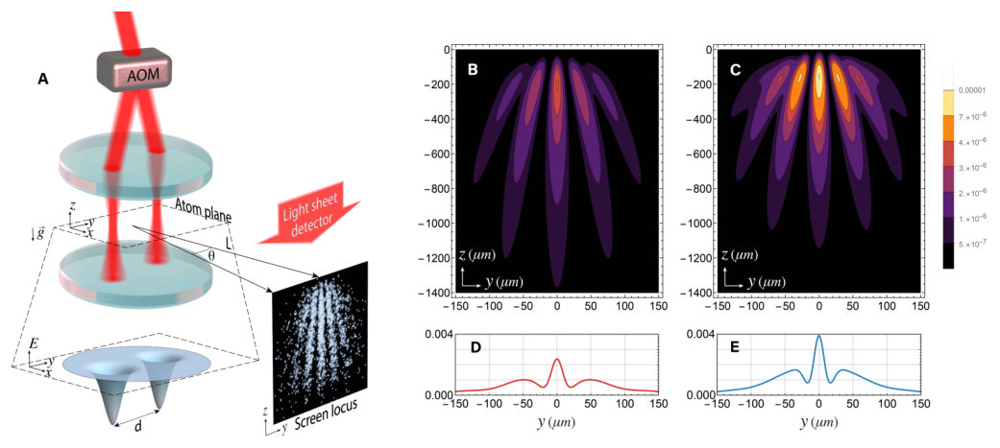
<figcaption class="paper-figure-caption"><b>Fig 1.</b> FIG. 1. A realization of the proposed experimental scheme and arrival position distributions for two proposals. Panel A shows a schematic of one realization of the proposed experimental scheme. An atom is prepared in the delocalized ground state of an optical double-well potential [68], which is formed by two laser beams generated by an acousto-optic modulator (AOM) driven by two radio-frequency (rf) tones. Lenses following the AOM control the beam geometry. The separation between the two wells is precisely tuned by the frequency difference of the rf drives. The atom is released from the trap in the presence of a screen in the plane x=L, where the origin of the coordinate system is taken to...</figcaption>
</figure>
<figure class="paper-figure-card">
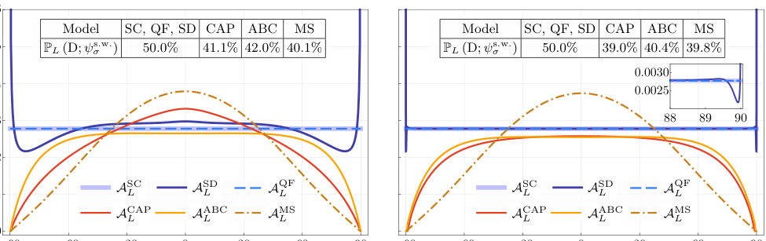
<figcaption class="paper-figure-caption"><b>Fig 2.</b> FIG. 2. Comparison of AL(θ; ψs.w. σ ) for L = 10σ (left) and L = 103σ (right). The total detection probabilities PL(D; ψs.w. σ ) are shown in the table. The inset shows the QF and SD distributions over the angular interval from 88 to 90 degrees for L = 103σ. For CAP, the potential is µ1 σ, where the potential height (the superscript of µ) is given in units of ℏ2/(2mσ2). For ABC, β = i/(2σ), and for MS, λ = 2σ.</figcaption>
</figure>
<figure class="paper-figure-card">
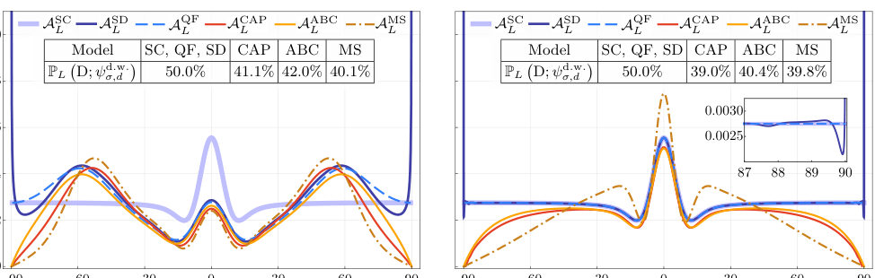
<figcaption class="paper-figure-caption"><b>Fig 3.</b> FIG. 3. Comparison of the arrival position distributions AL  θ; ψd.w. σ,d  for the double-well initial state with well separation d = 20σ. As in Fig. 2, the panels show results for L = 10σ (left) and L = 103σ (right), with total detection probabilities PL  D; ψd.w. σ,d  listed in the inset tables. All model parameters remain identical to the single-well case: for CAP, the potential is µ1 σ (where the superscript denotes potential height in units of ℏ2/(2mσ2)); for ABC, β = i/(2σ); and for MS, λ = 2σ. The inset shows the QF and SD distributions over the angular interval from 87 to 90 degrees for L = 103σ.</figcaption>
</figure>
<figure class="paper-figure-card">

<figcaption class="paper-figure-caption"><b>Fig 4.</b> FIG. 4. The total detection probabilities for a Gaussian ini- tial state with initial width ασ as a function of the rescaling parameter α. The detector parameters are fixed across rescal- ings, with λ = 2σ, β = i/(2σ), and a CAP potential µ1 σ where the potential height is given in units of ℏ2/(2mσ2).</figcaption>
</figure>
</div>

<p><strong>Summary.</strong> This paper investigates the 'arrival position problem'—predicting where a particle will be detected on an always-on screen. The authors compare multiple theoretical frameworks proposed to solve this issue, showing that these models make distinct and experimentally distinguishable predictions. This highlights a persistent theoretical blind spot in standard quantum mechanics regarding time-resolved spatial measurements.</p>
<p><strong>Why it may be interesting.</strong> This is highly relevant to AMO physics as it tackles fundamental issues in quantum measurement theory applied to matter waves, particularly concerning the interpretation of detection events for cold atoms or trapped particles.</p>
<details>
<summary>Detailed structure</summary>
<p><strong>Main problem.</strong> The paper addresses the 'arrival position problem' in quantum mechanics: predicting the probability distribution of <em>where</em> a particle is detected on an 'always on' screen, which complements the more studied arrival time problem.</p>
<p><strong>Main result.</strong> The authors demonstrate that various proposed theoretical solutions to this problem yield quantitatively distinguishable predictions for arrival positions, even in simple experiments and the far-field limit.</p>
<p><strong>Method.</strong> A comparative analysis is performed by deriving and contrasting quantitative predictions from several established formalisms designed to handle continuous measurement processes at a detector screen.</p>
<p><strong>Model / system.</strong> The theoretical framework models an experiment where a particle (e.g., an atom) is prepared in a trap, released to disperse under gravity, and monitored by an 'always on' planar detector screen over a fixed time interval T.</p>
<p><strong>Key observables.</strong> The joint distribution of arrival times and positions $(\Delta t - t_i, s)$, or the marginal spatial distribution (positions on the screen).</p>
<p><strong>Important parameters / regimes.</strong> The detection process is sensitive to finite waiting times $T$ and the distance $L$ to the screen; comparisons are made in the far-field limit.</p>
<p><strong>Assumptions / limitations.</strong> Standard quantum theory is shown to be inadequate for describing processes occurring across time, necessitating comparison between multiple proposed theoretical extensions (e.g., semiclassical vs. quantum flux).</p>
<p><strong>Figures summary.</strong> Figure 1 schematically illustrates the proposed experimental setup and compares predicted arrival position distributions derived from different theoretical proposals.</p>
<p><strong>Paper structure.</strong> The paper introduces the conceptual gap regarding arrival position prediction, surveys several competing theoretical models (Semiclassical, Quantum Flux, CAP, etc.), and then quantitatively compares their predictions using a generalized experimental setup.</p>
</details>
<details>
<summary>Abstract</summary>
<p>The problem of making unambiguous probabilistic predictions about experiments involving waiting "always on" detectors remains a challenge for quantum theory. While most research on this problem studies arrival time, i.e., predicting the distribution of when detection events occur, this paper studies the arrival position problem, which is the complementary challenge of predicting the distribution of where detection events occur. Despite the widespread recognition of the arrival time problem, the inability of standard quantum theory to address the arrival position problem remains a pervasive theoretical blind spot. In this paper, we compare quantitative arrival position predictions derived from prominent proposed solutions to the screen problem. As we show, these models yield distinguishable predictions even in relatively simple experiments achievable with current technology. Notably, many of these discrepancies persist even in the far-field limit, where standard semiclassical approximations are typically assumed to be valid.</p>
</details>
<p><sub><a href="#top">↑ back to top</a></sub></p>

<p><a id="paper-2607.04175"></a></p>
<h3 id="realizing-next-nearest-neighbor-coupling-and-peierls-phase-in-circuits"><a href="http://arxiv.org/abs/2607.04175v1">Realizing Next-Nearest-Neighbor Coupling and Peierls Phase in Circuits</a></h3>
<p><strong>Authors:</strong> Xin-Sheng Zhang, Wen-Jie Xu, Hang-Yu Gu, Chuan-Xun Du, Yong-Long Wang<br>
<strong>Type:</strong> both · <strong>Category:</strong> other · <strong>PDF:</strong> <a href="https://arxiv.org/pdf/2607.04175v1">https://arxiv.org/pdf/2607.04175v1</a><br>
<strong>Analysis basis:</strong> full PDF text, analyzed in chunks
<strong>Topic relevance:</strong> 🔥 <code>analog quantum simulation</code> <strong>4/5</strong> · 🔥 <code>driven-dissipative phase transition</code> <strong>4/5</strong> · <code>correlated / nonlocal dissipation</code> <strong>3/5</strong> · <code>methods for driven-dissipative</code> <strong>3/5</strong> · <code>non-equilibrium dynamics</code> <strong>3/5</strong> · <code>non-equilibrium universality</code> <strong>3/5</strong> · <code>Frenkel-Kontorova</code> <strong>2/5</strong> · <code>QC/QI experiment</code> <strong>2/5</strong> · <code>Keldysh / 2PI / non-Gaussian methods</code> <strong>1/5</strong> · <code>Kondo &amp; dissipative impurity</code> <strong>1/5</strong> · <code>correlated cavity matter</code> <strong>1/5</strong> · <code>entanglement &amp; information structure</code> <strong>1/5</strong> · <code>exotic spin models in light-matter</code> <strong>1/5</strong> · <code>scars &amp; prethermalization</code> <strong>1/5</strong></p>
<div class="figure-strip-hint">↔ Scroll figures horizontally</div>
<div class="paper-figures-scroll">
<figure class="paper-figure-card">

<figcaption class="paper-figure-caption"><b>Fig 1.</b> FIG. 1. Theoretical models and circuit implementations of the non-Hermitian one-dimensional trimerized circuits. (a) Initially trimerized SSH model with NN couplings g1 and g2. (b) Enhanced trimerized SSH model with an additional NNN coupling ν. (c) Reenhanced trimerized SSH model with an NNN coupling ν and a Peierls phase φ. (d)–(f) Circuit im- plementations corresponding to panels (a)–(c), respectively.</figcaption>
</figure>
<figure class="paper-figure-card">

<figcaption class="paper-figure-caption"><b>Fig 2.</b> FIG. 2. Eigenfrequency spectra and total Zak phase for the initial and NNN-coupled models showing the transition from a two-sector response to a stepwise topological sequence. (a) The real parts of the eigenfrequency spectra for ν = 0 and φ = 0; (b) The imaginary parts for ν = 0 and φ = 0; (c) The total Zak phase ztot of ν = 0 and φ = 0; (d) The real parts for ν = 0.2 and φ = 0; (e) The imaginary parts for ν = 0.2 and φ = 0; and (f) The total Zak phase ztot of ν = 0.2 and φ = 0.</figcaption>
</figure>
<figure class="paper-figure-card">
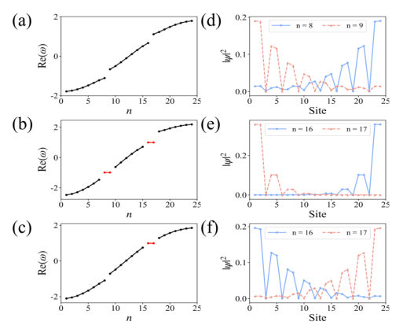
<figcaption class="paper-figure-caption"><b>Fig 3.</b> FIG. 3. Real-part eigenfrequency spectra and corresponding eigenstate distributions at representative parameters used to identify the boundary-localized sectors. (a)–(c) Real parts of the eigenfrequency spectra for θ = 0.3π, ν = 0; θ = π, ν = 0; and θ = 0.5π, ν = 0.2, φ = 0, respectively. (d), (e) Spatial distributions of the eigenstates associated with the red isolated eigenvalues in panel (b). (f) Spatial distribution of the eigenstate associated with the red isolated eigenvalue in panel (c). Black dots denote bulk-state branches, and red dots denote isolated edge states separated from the bulk bands.</figcaption>
</figure>
<figure class="paper-figure-card">

<figcaption class="paper-figure-caption"><b>Fig 4.</b> FIG. 4. Peierls-phase-driven reconstruction of topological phase regions and edge-state localization. (a) The upper- and lower-edge-state stability-region widths ∆θ± versus the Peierls phase φ. (b) The inverse participation ratios IPRs± of the upper and lower edge states versus φ. In both panels, blue and red curves denote the upper and lower edge states, respectively, and the green horizontal line denotes the refer- ence result for ν = 0. The parameters are γ = 0.2 and ν = 0.2.</figcaption>
</figure>
<figure class="paper-figure-card">

<figcaption class="paper-figure-caption"><b>Fig 5.</b> FIG. 5. PCB layout of the non-Hermitian topological circuit and enlarged PCB layout of a single unit cell. The numbered labels indicate the main circuit components: (1) tunable coupling capacitor array, consisting of six 200 pF capacitors and one 500 pF capacitor; (2) gain/loss module, including one dual operational amplifier ADA4891-2, two 10 kΩcurrent-limiting resistors, a tunable negative-resistance module, and 100 nF and 10 µF decoupling capacitors; (3) Peierls-phase circuit module; and (4) tunable resistor R0 module.</figcaption>
</figure>
</div>

<p><strong>Summary.</strong> The authors demonstrate how to engineer topological physics by implementing NNN coupling and a Peierls phase into superconducting RLC circuits modeling an SSH chain. They show that these additions allow for precise control over edge-state properties, enabling the realization of tunable synthetic gauge fields in solid-state platforms.</p>
<p><strong>Why it may be interesting.</strong> This work provides an excellent platform for studying synthetic gauge fields (Peierls phase) in solid-state analogues (circuits), which is highly relevant to open quantum systems, superconducting circuits, and engineered quantum materials.</p>
<details>
<summary>Detailed structure</summary>
<p><strong>Main problem.</strong> The research aims to realize and study topological physical states by engineering Next-Nearest-Neighbor (NNN) coupling and a Peierls phase within superconducting RLC circuits.</p>
<p><strong>Main result.</strong> The introduction of NNN coupling enriches the topological sequence, while the Peierls phase acts as a synthetic gauge field that allows for complementary manipulation of edge-state stability intervals and localization strengths.</p>
<p><strong>Method.</strong> The study combines theoretical analysis using the circuit Laplacian formalism with numerical simulations and direct experimental measurements on fabricated PCB circuits.</p>
<p><strong>Model / system.</strong> The physical system is a trimerized, non-Hermitian one-dimensional Su-Schrieffer-Heeger (SSH) model implemented in an RLC circuit. The Hamiltonian/dynamics are governed by the circuit Laplacian derived from Kirchhoff's laws.</p>
<p><strong>Key observables.</strong> Topological states, total Zak phase ($z_{tot}$), stability region widths ($\Delta	heta_{\pm}$), and Inverse Participation Ratios ($IPR_{\pm}$) quantifying edge-state localization strength.</p>
<p><strong>Important parameters / regimes.</strong> NNN coupling strength ($
u$), Peierls phase ($\varphi$), and circuit parameters like $C_0, L_0$.</p>
<p><strong>Assumptions / limitations.</strong> The analysis relies on the equivalence between the effective Hamiltonian derived from the circuit Laplacian and the physical system's spectrum; approximations are used for edge-state resonance conditions.</p>
<p><strong>Figures summary.</strong> Figures illustrate theoretical models (Initial, Enhanced, Reenhanced), show spectra and Zak phase dependence on parameters ($
u, \varphi$), and present experimental voltage profiles demonstrating complementary modulation of edge states with $\varphi$.</p>
<p><strong>Paper structure.</strong> The paper progresses by sequentially modeling the system: starting with nearest-neighbor coupling, enhancing it with NNN coupling, and finally reenhancing it by incorporating a Peierls phase. Analysis involves deriving effective Hamiltonians from circuit Laplacians and characterizing topological invariants.</p>
</details>
<details>
<summary>Abstract</summary>
<p>We really design the trimerized circuits for the non-Hermitian one-dimensional Su-Schrieffer-Heeger models. There are three models, the initial one just considers the nearest neighbor coupling, the enhanced one is extended to contain the next-nearest-neighbor coupling, and the final one is reenhanced by introducing the Peierls phase. We investigate the dynamics of the circuit Laplacians with respect to the models, find that the topological states appear in the initial model and the response intervals are substantially affected by the next-nearest-neighbor coupling channels and the Peierls phase. These results are practically demonstrated by numerical simulations and experimental measurements. As a conclusion, the trimerized circuits can provide an adjustable and simple platform to investigate new topological physical states.</p>
</details>
<p><sub><a href="#top">↑ back to top</a></sub></p>

<p><a id="paper-2607.04742"></a></p>
<h3 id="quantum-optical-bound-states-in-the-continuum"><a href="http://arxiv.org/abs/2607.04742v1">Quantum-Optical Bound States in the Continuum</a></h3>
<p><strong>Authors:</strong> Ruo Kun Cai, Zhi Jiao Deng, Chun Wang Wu, Ping Xing Chen<br>
<strong>Type:</strong> both · <strong>Category:</strong> other · <strong>PDF:</strong> <a href="https://arxiv.org/pdf/2607.04742v1">https://arxiv.org/pdf/2607.04742v1</a><br>
<strong>Analysis basis:</strong> full PDF text, analyzed in chunks
<strong>Topic relevance:</strong> 🔥 <code>analog quantum simulation</code> <strong>4/5</strong> · <code>Tavis-Cummings &amp; cavity-many-emitter</code> <strong>3/5</strong> · <code>driven-dissipative phase transition</code> <strong>3/5</strong> · <code>interference shaping light</code> <strong>3/5</strong> · <code>quantum optics experiment</code> <strong>3/5</strong> · <code>Frenkel-Kontorova</code> <strong>2/5</strong> · <code>QC/QI experiment</code> <strong>2/5</strong> · <code>methods for driven-dissipative</code> <strong>2/5</strong> · <code>non-equilibrium dynamics</code> <strong>2/5</strong> · <code>correlated / nonlocal dissipation</code> <strong>1/5</strong> · <code>correlated cavity matter</code> <strong>1/5</strong> · <code>entanglement &amp; information structure</code> <strong>1/5</strong> · <code>exotic spin models in light-matter</code> <strong>1/5</strong> · <code>non-equilibrium universality</code> <strong>1/5</strong></p>
<div class="figure-strip-hint">↔ Scroll figures horizontally</div>
<div class="paper-figures-scroll">
<figure class="paper-figure-card">

<figcaption class="paper-figure-caption"><b>Fig 1.</b> FIG. 1. Schematic of the spin-boson lattice model and the for- mation of a quantum-optical BIC. (a) Mapping of the driven JC model onto a FSL, comprising two semi-infinite anisotropic SSH chains coupled to a central chain with a continuous spec- trum. (b) Symmetric coupling of the localized bound states (in each SSH chain) to the common continuum. Destructive and constructive quantum interference between these chan- nels gives rise to a BIC and a leaky mode, respectively. (c) Spectroscopic detection protocol: Fourier analysis of the chi- ral symmetry operator’s time evolution reveals the BIC sig- nature—a discrete spectral peak within a continuous back- ground.</figcaption>
</figure>
<figure class="paper-figure-card">
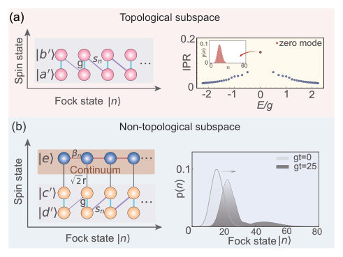
<figcaption class="paper-figure-caption"><b>Fig 2.</b> FIG. 2. Exact decomposition of the Hilbert space and lattice structure. (a) Topological subspace: mapping onto a semi- infinite anisotropic SSH chain, which hosts a topological zero mode localized at the domain wall. The markedly higher in- verse participation ratio (IPR) of this mode and its confined probability distribution in the Fock-state basis (inset) con- firm its localized character. (b) Trivial (non-topological) sub- space: the SSH chain coupled to a continuum. The original topological zero mode becomes unstable due to leakage into the continuum, manifested by the broadening and diffusion of the probability distribution p(n) during time evolution. Pa- rameters: g=1, s=0.25, r=1,...</figcaption>
</figure>
<figure class="paper-figure-card">
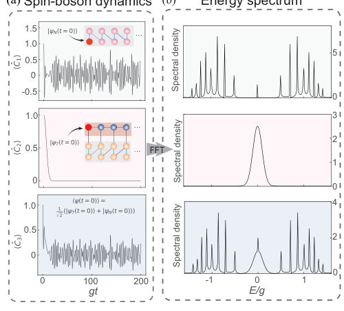
<figcaption class="paper-figure-caption"><b>Fig 3.</b> FIG. 3. Spectroscopic protocol for detecting the quantum- optical BIC. (a) Time evolution of the chiral-symmetry- operator expectation values for three different initial states: the topological zero mode |a′, 0⟩(top), |e, 0⟩residing in the trivial subspace (middle), and their coherent superposition (bottom). (b) Corresponding spectra obtained by Fourier transform, showing a zero-mode discrete peak (top), a broad continuum of the trivial subspace (middle), and the defini- tive BIC signature—a sharp peak embedded in a continuous background (bottom). Parameters: g=1, s=0.5, r=0.01, and β=0.1.</figcaption>
</figure>
<figure class="paper-figure-card">
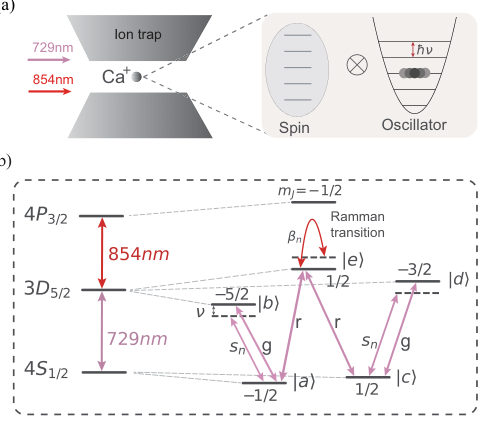
<figcaption class="paper-figure-caption"><b>Fig 4.</b> FIG. 4. Experimental proposal for the quantum-optical BIC with a trapped ion. (a) A single 40Ca+ ion confined in a Paul trap, representing the composite spin-boson system. The ef- fective (pseudo-)spin is encoded in a selected set of internal electronic states, and the bosonic mode corresponds to the harmonic motion (phonon) of the ion with frequency ν. The system is coherently manipulated via 729-nm and 854-nm laser beams. (b) Relevant level scheme, optical transitions, and laser wavelengths for engineering the Hamiltonian that realizes the quantum-optical BIC.</figcaption>
</figure>
</div>

<p><strong>Summary.</strong> The paper tackles the challenge of observing Bound States in the Continuum (BICs) in quantized optical systems by modeling it with a driven Jaynes-Cummings system mapped onto coupled SSH chains. A BIC is engineered through destructive quantum interference between topological zero modes, and its signature is predicted to be a sharp spectral peak embedded in a continuum background. The authors conclude by providing a detailed, feasible experimental implementation using a single trapped ion.</p>
<p><strong>Why it may be interesting.</strong> This work is highly relevant because it bridges abstract concepts from condensed matter (topological insulators, SSH chains) and photonics (BICs) directly into the domain of quantum optics using a mature platform like trapped ions. It provides a clear roadmap for realizing exotic quantum states at the quantum limit.</p>
<details>
<summary>Detailed structure</summary>
<p><strong>Main problem.</strong> The primary goal is to find a quantum-optical analog of Bound States in the Continuum (BICs) and develop a method to experimentally detect their unique spectral signature.</p>
<p><strong>Main result.</strong> The authors demonstrate that a BIC can be formed in a driven multi-level Jaynes-Cummings system by engineering destructive quantum interference between two topological zero modes. They provide a highly feasible experimental proposal using a single trapped ion platform.</p>
<p><strong>Method.</strong> Theoretical analysis involves mapping the JC model onto an extended structure of coupled SSH chains (Fock-state lattice). Detection relies on Fourier-transforming the time-dependent expectation value of the system's chiral-symmetry operator to reveal a discrete peak in a continuous background spectrum.</p>
<p><strong>Model / system.</strong> The core model is a driven multi-level Jaynes-Cummings (JC) system, which is mapped onto an extended structure comprising two semi-infinite inhomogeneous Su-Schrieffer-Heeger (SSH) chains coupled to a common continuum. Experimentally, this is proposed using a single trapped $^{40}	ext{Ca}^{+}$ ion acting as a spin-boson system.</p>
<p><strong>Key observables.</strong> The characteristic signature of the BIC is a discrete spectral peak embedded within a continuous background spectrum, measured via Fourier transform of the chiral-symmetry operator's time evolution.</p>
<p><strong>Important parameters / regimes.</strong> JC-coupling strength ($g \sim 2\pi 	imes 10	ext{kHz}$); total evolution time ($t_g < 5	ext{ms}$).</p>
<p><strong>Assumptions / limitations.</strong> The development relies on the concept of Fock-state lattices (FSLs) to engineer the necessary extended structure for quantum optics, and the feasibility hinges on precise laser control in trapped ions.</p>
<p><strong>Figures summary.</strong> Figures illustrate the mapping from the JC model to an FSL with two SSH chains coupled to a continuum. They detail the interference mechanism leading to BIC formation and show the spectroscopic detection protocol using Fourier analysis of the chiral symmetry operator's time evolution.</p>
<p><strong>Paper structure.</strong> The paper first establishes the theoretical framework by modeling the system as a mapped FSL structure, identifying the BIC via destructive quantum interference between topological zero modes. It then develops the spectroscopic measurement protocol using the chiral-symmetry operator. Finally, it translates this theory into a concrete, highly feasible experimental proposal utilizing trapped ions.</p>
</details>
<details>
<summary>Abstract</summary>
<p>Bound states in the continuum (BICs) are counterintuitive localized states that lie within the continuum of extended states. While extensively realized and utilized in classical wave systems, it is still unclear what a close analog of BICs would be, and how to extract their experimental signature in quantum-optical settings -- where the wave field itself is quantized into bosonic excitations. Here, we present a paradigmatic quantum-optical model consisting of a driven multi-level Jaynes-Cummings (JC) system, featuring few quantum degrees of freedom yet capable of hosting a BIC. Using the concept of a Fock-state lattice (FSL), this model can be mapped to an extended structure comprising two semi-infinite inhomogeneous Su-Schrieffer-Heeger (SSH) chains coupled to a common continuum. An appropriate quantum superposition of two topological zero modes from the separate chains forms a BIC that remains perfectly localized in the Fock-state dimension within the continuum spectrum, due to complete decoupling from the common continuum via destructive quantum interference. We further develop a method to extract the spectroscopic signature of the BIC -- a discrete peak embedded in a continuous background -- by Fourier-transforming the time-dependent dynamics of the system's chiral-symmetry operator. A highly feasible experimental proposal using a single trapped ion is provided. Our work bridges BIC physics with quantum optics, opening a pathway to harnessing such exotic states at the quantum limit.</p>
</details>
<p><sub><a href="#top">↑ back to top</a></sub></p>

<p><a id="paper-2607.03820"></a></p>
<h3 id="matter-wave-induced-transparenc"><a href="http://arxiv.org/abs/2607.03820v1">Matter-wave Induced Transparenc</a></h3>
<p><strong>Authors:</strong> Tongkang wang, Yuqi Liu, Wenlan Chen, Zhendong Zhang, Jiazhong Hu<br>
<strong>Type:</strong> both · <strong>Category:</strong> other · <strong>PDF:</strong> <a href="https://arxiv.org/pdf/2607.03820v1">https://arxiv.org/pdf/2607.03820v1</a><br>
<strong>Analysis basis:</strong> full PDF text, analyzed in chunks
<strong>Topic relevance:</strong> 🔥 <code>analog quantum simulation</code> <strong>4/5</strong> · 🔥 <code>methods for driven-dissipative</code> <strong>4/5</strong> · <code>correlated / nonlocal dissipation</code> <strong>3/5</strong> · <code>driven-dissipative phase transition</code> <strong>3/5</strong> · <code>interference shaping light</code> <strong>3/5</strong> · <code>non-equilibrium dynamics</code> <strong>2/5</strong> · <code>non-equilibrium universality</code> <strong>2/5</strong> · <code>Keldysh / 2PI / non-Gaussian methods</code> <strong>1/5</strong> · <code>Kondo &amp; dissipative impurity</code> <strong>1/5</strong> · <code>entanglement &amp; information structure</code> <strong>1/5</strong> · <code>scars &amp; prethermalization</code> <strong>1/5</strong></p>
<div class="figure-strip-hint">↔ Scroll figures horizontally</div>
<div class="paper-figures-scroll">
<figure class="paper-figure-card">
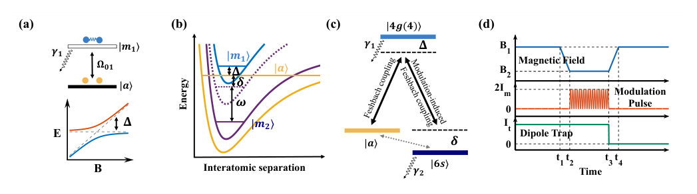
<figcaption class="paper-figure-caption"><b>Fig 1.</b> FIG. 1. From a two-level Feshbach resonance to a three-level matter-wave interference system. (a) A conventional magnetic Feshbach resonance can be viewed as an effective two-level system formed by an open-channel free-atom state |a⟩and a closed-channel molecular state |m1⟩. The magnetic field tunes the detuning ∆between the two states, while the Feshbach coupling ℏΩ01 produces an avoided crossing. Near resonance, the admixture of the lossy molecular state (with decay rate γ1) enhances inelastic collisional loss, analogous to absorption in a resonantly coupled two-level optical system. (b) To construct a three-level system for interacting matter waves, a second molecular state |m2⟩in...</figcaption>
</figure>
<figure class="paper-figure-card">

<figcaption class="paper-figure-caption"><b>Fig 2.</b> Fig. 1(a) illustrates a basic level structure underlying a conventional Feshbach resonance in a reduced descrip- tion of a two-level system: an open-channel free-atom state |a⟩coherently couples to a closed-channel molec- ular state |m1⟩through inherent collisional interactions (e.g., isotropic electronic and relativistic spin-dependent interactions) [9, 10]. In this regard, a Feshbach resonance realizes an effective two-level coupled system, where the magnetic field B tunes the relative detuning ∆between |a⟩and |m1⟩(with |m1⟩referenced to |a⟩). Plotted as an energy diagram versus B, the resonance corresponds to a Landau–Zener–type avoided crossing between the two states, with a gap set by...</figcaption>
</figure>
<figure class="paper-figure-card">
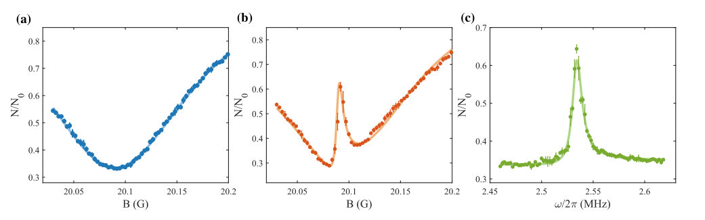
<figcaption class="paper-figure-caption"><b>Fig 3.</b> FIG. 2. Observation of matter-wave induced transparency in collisional loss. (a) Loss spectrum of a conventional two-level Feshbach resonance. The modulation frequency is fixed at ω/2π = 1.5 MHz, for which the second molecular state is far from resonance (δ/2π ≃−1 MHz, where 1 MHz corresponds to an effective Zeeman shift at around 0.8 G), and the system is therefore treated as a two-level configuration. The remaining atom fraction N/N0 shows a broad loss feature associated with the first molecular state |m1⟩. The center is shifted from the original |m1⟩-induced Feshbach resonance position of B0 = 19.84 G to B0 = 20.09 G due to the DC component light shift of the intensity-modulated pulse...</figcaption>
</figure>
<figure class="paper-figure-card">

<figcaption class="paper-figure-caption"><b>Fig 4.</b> Fig. 1(d) shows the experimental timing sequence. We start with a BEC of cesium-133 atoms in the 6S1/2 hyper- fine ground state |F = 3, mF = 3⟩with approximately 1 × 105 atoms in a crossed optical dipole trap. A ho- mogeneous magnetic field B along the z axis defines the quantization axis and tunes the energy difference between the atomic threshold and the Feshbach molecular states [18]. After preparing the condensate, we ramp B to a target value, apply a modulation pulse of duration t, and then measure the remaining atom number N by absorp- tion imaging after time of flight (Supplementary Mate- rial). Throughout this work, the primary observable is the remaining atom fraction N/N0 (or...</figcaption>
</figure>
<figure class="paper-figure-card">
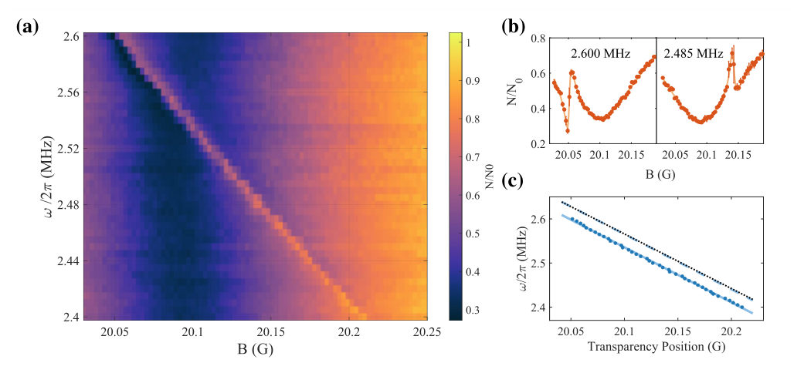
<figcaption class="paper-figure-caption"><b>Fig 5.</b> FIG. 3. Dark-state condition of matter-wave induced transparency and resonance interference. (a) Two- dimensional map of the remaining atom fraction N/N0 as a function of magnetic field B and modulation frequency ω. The broad region of reduced atom number corresponds to the dissipative Feshbach resonance involving the lossy molecular state |m1⟩. Within this lossy background, a narrow ridge of enhanced survival appears, marking the matter-wave transparency condition where the second molecular state |m2⟩participates in the three-level interference. (b) Representative magnetic-field spectra taken at two different modulation frequencies, ω/2π = 2.600 MHz and 2.485 MHz. The loss-suppressed...</figcaption>
</figure>
</div>

<p><strong>Summary.</strong> The authors report realizing matter-wave induced transparency (MWIT) in a cesium Bose-Einstein condensate by exploiting destructive interference within collisional loss resonances. By coupling an atomic state to two molecular states using modulation-induced Feshbach resonances, they create a tunable transparency window. This establishes a powerful, non-optical route for studying programmable non-Hermitian physics and quantum sensing.</p>
<p><strong>Why it may be interesting.</strong> This work provides an interference-based route for exploring programmable non-Hermitian physics using only intrinsic atomic interactions, which is highly relevant for understanding open quantum systems and precision measurements in AMO physics.</p>
<details>
<summary>Detailed structure</summary>
<p><strong>Main problem.</strong> To induce transparency directly through inherent atomic collisional interactions (matter-wave scattering) rather than relying on external optical excitation pathways, thereby suppressing collisional loss via interference.</p>
<p><strong>Main result.</strong> The study successfully realizes matter-wave induced transparency by observing a narrow transmission window embedded within a broad dissipative Feshbach resonance. This demonstrates that destructive interference among matter-wave scattering pathways can suppress atomic loss.</p>
<p><strong>Method.</strong> The research combines theoretical modeling (coupled differential equations, adiabatic elimination) with experimental realization using Bose-Einstein condensates and modulation-induced Feshbach resonances.</p>
<p><strong>Model / system.</strong> The system is a cesium BEC modeled as an effective three-level atom–molecule coupled system ($|a
angle$, $|m_1
angle$, $|m_2
angle$). The dynamics are governed by interactions leading to matter-wave interference phenomena analogous to EIT.</p>
<p><strong>Key observables.</strong> Loss spectrum (remaining atom fraction $N/N_0$), the narrow transparency window, and the dependence of resonance position on modulation frequency ($\omega$) and magnetic field ($B$).</p>
<p><strong>Important parameters / regimes.</strong> Modulation-induced coupling strength, detunings ($\Delta, \delta$), decay rates ($\gamma_1, \gamma_2$), and the background scattering length.</p>
<p><strong>Assumptions / limitations.</strong> The process relies on coupling intrinsic matter-wave interactions rather than external optical transitions. Mean-field approximations are used for coherent dynamics calculations.</p>
<p><strong>Figures summary.</strong> Figures show the experimental observation of a narrow transparency window within a broad Feshbach resonance, and theoretical analyses confirm linear scaling relationships between extracted parameters and applied fields/intensities.</p>
<p><strong>Paper structure.</strong> The paper progresses from establishing the physical model (three-level system via modulation-induced resonances) to presenting experimental measurements showing the tunable transparency window. It then delves into detailed theoretical derivations of effective scattering lengths based on coupled field equations.</p>
</details>
<details>
<summary>Abstract</summary>
<p>Electromagnetically induced transparency suppresses optical absorption through destructive interference, playing a central role in light-matter interaction and quantum information science. We report matter-wave induced transparency, where atomic collisional interactions induce transmission through a lossy molecular potential for the incident atomic scattering waves. Using cesium Bose-Einstein condensates and modulation-induced Feshbach resonances, we realize a three-level atom-molecule coupled system with unprecedented flexibility. Under the dark state condition, a narrow and tunable transparency window appears within a broad dissipative collisional resonance. The transparency window linewidth is controlled by modulation-induced coupling. And scattering pathways are selectable via multifrequency Floquet modulation. These results establish an interference-based route for exploring programmable nonequilibrium and non-Hermitian physics, steering quantum chemistry and precision measurements.</p>
</details>
<p><sub><a href="#top">↑ back to top</a></sub></p>

<p><a id="paper-2607.03950"></a></p>
<h3 id="orthogonality-edges-in-strong-coupling-quantum-work-statistics"><a href="http://arxiv.org/abs/2607.03950v1">Orthogonality Edges in Strong-Coupling Quantum Work Statistics</a></h3>
<p><strong>Authors:</strong> Atta ur Rahman, Muhammad Noman, S. M. Zangi, Saeed Haddadi<br>
<strong>Type:</strong> theory · <strong>Category:</strong> statistical mechanics · <strong>PDF:</strong> <a href="https://arxiv.org/pdf/2607.03950v1">https://arxiv.org/pdf/2607.03950v1</a><br>
<strong>Analysis basis:</strong> full PDF text, analyzed in chunks
<strong>Topic relevance:</strong> 🔥 <code>non-equilibrium universality</code> <strong>4/5</strong> · <code>correlated / nonlocal dissipation</code> <strong>3/5</strong> · <code>driven-dissipative phase transition</code> <strong>3/5</strong> · <code>methods for driven-dissipative</code> <strong>3/5</strong> · <code>non-equilibrium dynamics</code> <strong>3/5</strong> · <code>Keldysh / 2PI / non-Gaussian methods</code> <strong>2/5</strong> · <code>measurement-induced transitions</code> <strong>2/5</strong> · <code>Kondo &amp; dissipative impurity</code> <strong>1/5</strong> · <code>analog quantum simulation</code> <strong>1/5</strong> · <code>entanglement &amp; information structure</code> <strong>1/5</strong> · <code>exotic spin models in light-matter</code> <strong>1/5</strong> · <code>scars &amp; prethermalization</code> <strong>1/5</strong></p>
<div class="figure-strip-hint">↔ Scroll figures horizontally</div>
<div class="paper-figures-scroll">
<figure class="paper-figure-card">
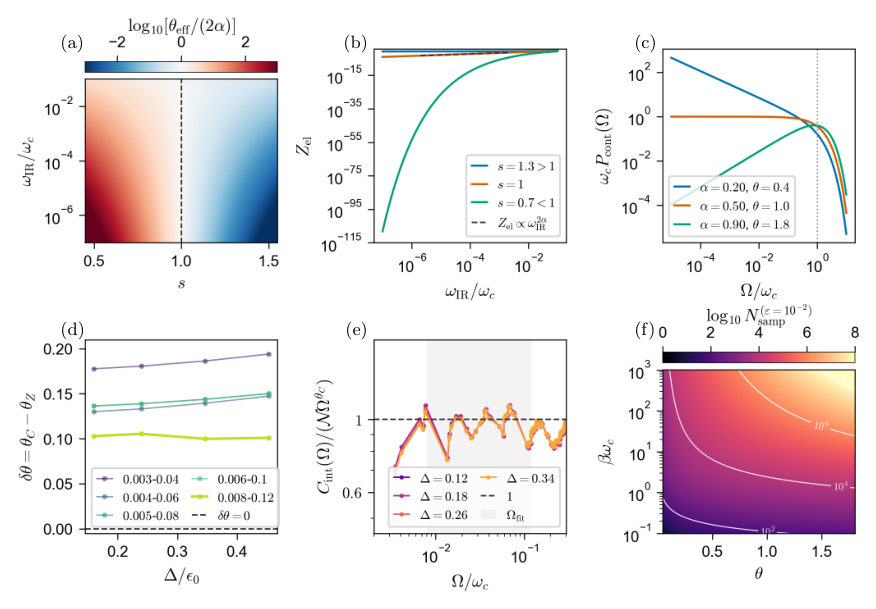
<figcaption class="paper-figure-caption"><b>Fig 1.</b> FIG. 1. Orthogonality edge and finite-energy crossover in quantum work statistics. (a) Running infrared exponent θeff = d ln Zel/d ln ωIR for the spectral density Js(ω) = αω1−s c ωse−ω/ωc. The color scale shows log10[θeff/(2α)], and the dashed vertical line marks the Ohmic boundary s = 1. The Ohmic bath is the marginal case between a finite elastic threshold line for s &gt; 1 and stronger infrared orthogonality for s &lt; 1. (b) Elastic threshold weight Zel as a function of the infrared cutoff ωIR/ωc. The super-Ohmic bath approaches a finite residue, the Ohmic bath shows algebraic extinction Zel ∝ω2α IR , and the sub-Ohmic bath is suppressed more rapidly. (c) Exact Ohmic continuum edge at the...</figcaption>
</figure>
<figure class="paper-figure-card">

<figcaption class="paper-figure-caption"><b>Fig 2.</b> FIG. 2. Finite-tunnelling crossover and edge-window spectral accounting. (a) Static Ohmic cloud benchmark for the same logarithmic discretization convention used in the finite-tunnelling calculation. The fitted exponent θcloud agrees with the target value 2α, anchoring the finite-bath normalization to the independent-boson fixed point. (b) Representative finite- tunnelling extraction at ∆/ϵ0 = 0.50. The elastic threshold weight is fitted as Zav el ∼ωθZ IR after geometric averaging over shifted logarithmic meshes, while the continuum weight is fitted as Cint(Ω) ∼ΩθC after interleaving the shifted spectra. The common horizontal variable ξ denotes ωIR for Zav el and Ωfor Cint. (c) Effective...</figcaption>
</figure>
</div>

<p><strong>Summary.</strong> The paper analyzes the quantum work statistics of a spin-boson model strongly coupled to an environment with infrared singularities. It demonstrates that while idealized models predict specific fixed points, finite physical effects cause a measurable separation between two key scaling exponents ($ heta_C &gt;    heta_Z$). This finding refines our understanding of how boundary conditions dictate energy dissipation in open quantum systems.</p>
<p><strong>Why it may be interesting.</strong> This work provides deep insights into non-equilibrium thermodynamics in open quantum systems, specifically quantifying how boundary conditions (orthogonality) manifest in measurable scaling laws of work distributions. This is highly relevant for understanding energy dissipation and measurement protocols.</p>
<details>
<summary>Detailed structure</summary>
<p><strong>Main problem.</strong> The study investigates how strong coupling to an infrared singular reservoir alters quantum work statistics, potentially converting a quasiparticle threshold line into a many-body edge.</p>
<p><strong>Main result.</strong> For finite tunneling, the continuum exponent ($    heta_C$) and the elastic overlap exponent ($    heta_Z$) are found to be separated ($    heta_C &gt;    heta_Z$), indicating a finite-energy crossover rather than a new asymptotic fixed point.</p>
<p><strong>Method.</strong> The authors use exact diagonalization on logarithmically discretized baths and compare scaling exponents derived from $z$-interleaved spectra ($ heta_C$) versus $z$-averaged overlaps ($ heta_Z$).</p>
<p><strong>Model / system.</strong> The system is the biased spin-boson model, analyzed under a sudden bias inversion protocol. The reservoir coupling strength is characterized by an infrared exponent $s$ (super-Ohmic, Ohmic, sub-Ohmic).</p>
<p><strong>Key observables.</strong> Zero-temperature inclusive work distribution $P(W)$, elastic weight ($Z_{	ext{el}}$), continuum probability $P_{	ext{cont}}(\Omega)$, and the derived exponents $    heta_C$ and $   heta_Z$.</p>
<p><strong>Important parameters / regimes.</strong> The infrared exponent $s$ (determining bath type), the tunneling amplitude ($\Delta$), and the energy window size are critical parameters.</p>
<p><strong>Assumptions / limitations.</strong> The separation $ heta_C &gt;    heta_Z$ is interpreted as a finite-energy crossover effect, not evidence for a new asymptotic fixed point. The analysis relies on logarithmic discretization of the bath spectrum.</p>
<p><strong>Figures summary.</strong> Figures illustrate the comparison between continuum and elastic exponents ($   heta_C$ vs $    heta_Z$), showing a positive separation ($\delta  heta &gt; 0$) for finite tunneling, while confirming exact benchmarks at the independent-boson limit where $   heta_C =    heta_Z$.</p>
<p><strong>Paper structure.</strong> The paper first establishes the fixed-point logic in the independent-boson limit (classifying baths by $s$). It then moves to finite tunneling using ED simulations, extracting and comparing $ heta_C$ and $   heta_Z$, and finally interpreting the resulting separation as a crossover diagnostic.</p>
</details>
<details>
<summary>Abstract</summary>
<p>Strong coupling to a reservoir can do more than shift, broaden, or dress the work peaks of a driven quantum system. When the reservoir is infrared singular, a sudden change of a local control parameter can alter the boundary condition seen by infinitely many low-energy modes, converting a quasiparticle-like threshold line into a many-body edge. We demonstrate this mechanism for the inclusive work distribution of the biased spin-boson model under a sudden bias inversion. In the independent-boson limit, the problem is exactly solvable and gives a sharp infrared classification: a super-Ohmic bath can retain a finite elastic threshold weight, whereas Ohmic and sub-Ohmic baths extinguish the elastic line through boundary orthogonality. At the Ohmic fixed point, the same exponent controls both the vanishing elastic residue and the low-work continuum. We then ask how this edge is resolved away from the static-boundary limit. Using displaced-basis exact diagonalization of logarithmically discretized baths, we find that finite tunnelling leaves an edge-like continuum over the accessible energy window, while separating two operational diagnostics of the threshold: the cumulative-continuum exponent extracted from $z$-interleaved spectra lies above the elastic-overlap exponent extracted from $z$-averaged overlaps, $θ_C>θ_Z$. We interpret this separation as a finite-energy crossover away from the static-boundary fixed point, not as evidence for a new asymptotic fixed point. The separation survives fitting-window variation, oscillator-cutoff checks, spectrum-size checks, and leave-one-$z$-out tests, while time-domain characteristic functions provide a compatible but non-decisive diagnostic. Finally, the same threshold edge controls the sampling cost of Jarzynski-type exponential averages, making rare low-work events increasingly important at low temperature.</p>
</details>
<p><sub><a href="#top">↑ back to top</a></sub></p>

<p><a id="paper-2607.04873"></a></p>
<h3 id="bloch-sphere-rotations-in-driven-double-well-for-ultracold-atoms"><a href="http://arxiv.org/abs/2607.04873v1">Bloch-sphere rotations in driven double-well for ultracold atoms</a></h3>
<p><strong>Authors:</strong> Michele Modugno, Marco Fattori, Giulio Pettini<br>
<strong>Type:</strong> both · <strong>Category:</strong> quantum gases · <strong>PDF:</strong> <a href="https://arxiv.org/pdf/2607.04873v1">https://arxiv.org/pdf/2607.04873v1</a><br>
<strong>Analysis basis:</strong> full PDF text, analyzed in chunks
<strong>Topic relevance:</strong> 🔥 <code>analog quantum simulation</code> <strong>4/5</strong> · 🔥 <code>non-equilibrium dynamics</code> <strong>4/5</strong> · <code>exotic spin models in light-matter</code> <strong>3/5</strong> · <code>non-equilibrium universality</code> <strong>3/5</strong> · <code>QC/QI experiment</code> <strong>2/5</strong> · <code>driven-dissipative phase transition</code> <strong>2/5</strong> · <code>methods for driven-dissipative</code> <strong>2/5</strong> · <code>Frenkel-Kontorova</code> <strong>1/5</strong> · <code>Keldysh / 2PI / non-Gaussian methods</code> <strong>1/5</strong> · <code>correlated / nonlocal dissipation</code> <strong>1/5</strong> · <code>entanglement &amp; information structure</code> <strong>1/5</strong></p>
<div class="figure-strip-hint">↔ Scroll figures horizontally</div>
<div class="paper-figures-scroll">
<figure class="paper-figure-card">
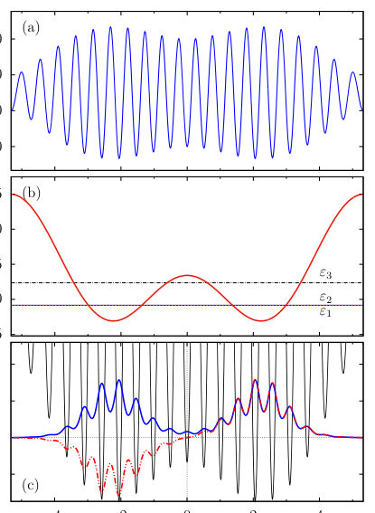
<figcaption class="paper-figure-caption"><b>Fig 1.</b> FIG. 1. (a) Plot of the BNSL potential in Eq. (2). (b) Effec- tive approximation (3), corresponding to a symmetric dou- ble well with a spatial separation between the two minima a ≃4.436 µm. The first three energy levels εi (i = 1, 2, 3) of H0 in Eq. (1) are also shown, displayed as horizontal lines. (c) Spatially symmetric (blue solid line) and antisymmetric (red dot-dashed line) low-lying eigenfunctions. The potential (black solid line) is included for reference.</figcaption>
</figure>
<figure class="paper-figure-card">

<figcaption class="paper-figure-caption"><b>Fig 2.</b> FIG. 2. Scheme of the two protocols P1 and P2 employed in this work (see text), indicated by blue and red lines, respec- tively. The top row displays three snapshots of the density configurations corresponding to the initial state (at different times for the two protocols), an intermediate configuration, and the final stationary configuration with equal population in the two wells.</figcaption>
</figure>
<figure class="paper-figure-card">
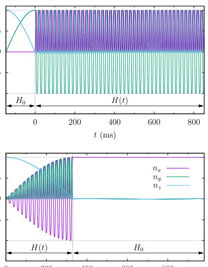
<figcaption class="paper-figure-caption"><b>Fig 3.</b> FIG. 3. Time evolution of the components of the Bloch unit vector for the two protocols, P1 (a) and P2 (b). See text for details.</figcaption>
</figure>
</div>

<p><strong>Summary.</strong> The authors demonstrate how controlled rotations of pseudospin states can be achieved in an ultracold atom double-well system by applying time-periodic driving fields. They utilize Floquet theory and numerical simulations to show that specific protocols allow for precise manipulation of the Bloch vector around arbitrary axes on the sphere. This provides a powerful platform for quantum simulation or information processing using cold atoms.</p>
<p><strong>Why it may be interesting.</strong> This work is highly relevant as it demonstrates a concrete method—Floquet engineering applied to ultracold atoms in optical lattices—to implement quantum gates or arbitrary unitary transformations on internal degrees of freedom (pseudospins).</p>
<details>
<summary>Detailed structure</summary>
<p><strong>Main problem.</strong> The research aims to achieve full coherent control over pseudospin dynamics, specifically realizing controlled rotations about arbitrary axes on the Bloch sphere.</p>
<p><strong>Main result.</strong> Protocols using time-periodic driving in a double-well potential allow for deterministic manipulation of the pseudospin state, demonstrating controlled rotations around multiple orthogonal axes.</p>
<p><strong>Method.</strong> The study employs numerical simulations and analytical techniques like the Floquet theory and Magnus expansion to model the time evolution operator.</p>
<p><strong>Model / system.</strong> The system is a non-interacting Bose-Einstein condensate trapped in a double-well potential realized via Beat-Note Superlattices. The dynamics are modeled by a driven Hamiltonian, which can be effectively reduced to a two-level pseudospin description.</p>
<p><strong>Key observables.</strong> Bloch sphere components (n_x(t), n_y(t), n_z(t)), Rabi period renormalization, and the time evolution of the state vector $\mathbf{n}(t)$.</p>
<p><strong>Important parameters / regimes.</strong> The analysis relies on operating in a fast modulation regime ($
u_{12} \ll 
u \ll 
u_{23}$) using specific driving parameters like $K = F_0a/(h
u) = \pi/2$.</p>
<p><strong>Assumptions / limitations.</strong> The primary assumptions are the non-interacting nature of the condensate and that the two-level effective model accurately captures the essential physics for both proposed protocols.</p>
<p><strong>Figures summary.</strong> Figures illustrate the BNSL potential, the implementation schemes (P1 and P2), and the resulting Bloch vector trajectories showing controlled rotations around specific axes like the y-axis.</p>
<p><strong>Paper structure.</strong> The paper first establishes the physical platform using BNSLs. It then develops the theoretical framework by deriving an effective two-level Hamiltonian under driving. The core of the work presents two distinct protocols (P1 and P2) to achieve controlled rotations, analyzing both the full dynamics numerically and approximating the evolution operator via Floquet theory.</p>
</details>
<details>
<summary>Abstract</summary>
<p>We show that, by using suitable protocols for a non-interacting condensate in a driven double-well, one can achieve controlled rotations about arbitrary axes in the equatorial plane of the Bloch sphere, composed with fast rotations about the $z$-axis. Specifically, we investigate the dynamics induced by a spatially linear time-periodic potential, by means of numerical simulations. We also provide an explicit two-level model that accurately captures the microscopic evolution of the driven system, with the full time-dependent evolution operator obtained using a Floquet-based approach. The analysis is carried out using as a reference a recently realized experimental platform consisting of arrays of double-well potentials based on Beat-Note Superlattices, to which the proposed control scheme is directly applicable.</p>
</details>
<p><sub><a href="#top">↑ back to top</a></sub></p>

<p><a id="paper-2607.04736"></a></p>
<h3 id="magnetic-graphs-for-cavity-quantum-electrodynamics"><a href="http://arxiv.org/abs/2607.04736v1">Magnetic graphs for cavity quantum electrodynamics</a></h3>
<p><strong>Authors:</strong> Sunkyu Yu, Xianji Piao, Namkyoo Park<br>
<strong>Type:</strong> theory · <strong>Category:</strong> other · <strong>PDF:</strong> <a href="https://arxiv.org/pdf/2607.04736v1">https://arxiv.org/pdf/2607.04736v1</a><br>
<strong>Analysis basis:</strong> full PDF text, analyzed in chunks
<strong>Topic relevance:</strong> 🔥 <code>analog quantum simulation</code> <strong>4/5</strong> · 🔥 <code>exotic spin models in light-matter</code> <strong>4/5</strong> · <code>Tavis-Cummings &amp; cavity-many-emitter</code> <strong>3/5</strong> · <code>correlated cavity matter</code> <strong>3/5</strong> · <code>non-equilibrium dynamics</code> <strong>3/5</strong> · <code>spintronics-quantum-optics interface</code> <strong>2/5</strong> · <code>correlated / nonlocal dissipation</code> <strong>1/5</strong> · <code>driven-dissipative phase transition</code> <strong>1/5</strong> · <code>entanglement &amp; information structure</code> <strong>1/5</strong> · <code>methods for driven-dissipative</code> <strong>1/5</strong> · <code>non-equilibrium universality</code> <strong>1/5</strong></p>
<div class="figure-strip-hint">↔ Scroll figures horizontally</div>
<div class="paper-figures-scroll">
<figure class="paper-figure-card">
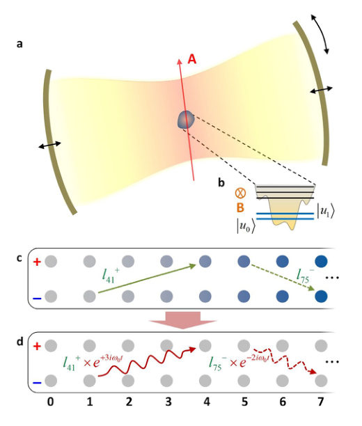
<figcaption class="paper-figure-caption"><b>Fig 1.</b> FIG. 1. Magnetic graph model for single-atom cavity QED. a,b, Schematics for the generalized</figcaption>
</figure>
<figure class="paper-figure-card">
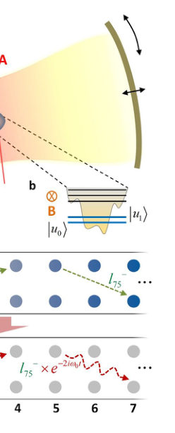
<figcaption class="paper-figure-caption"><b>Fig 2.</b> Figure 2 shows the FR graph connectivity depending on η. According to Eq. (4), the graph</figcaption>
</figure>
<figure class="paper-figure-card">

<figcaption class="paper-figure-caption"><b>Fig 3.</b> FIG. 2. Graph connectivity for different values of η at t = 0. Edges with weights greater than</figcaption>
</figure>
<figure class="paper-figure-card">

<figcaption class="paper-figure-caption"><b>Fig 4.</b> FIG. 3. Stronger coupling indicates a higher cost for separating a large nonmagnetic</figcaption>
</figure>
<figure class="paper-figure-card">
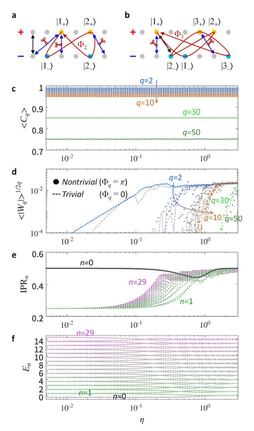
<figcaption class="paper-figure-caption"><b>Fig 5.</b> FIG. 4. Phase frustration governs the USC. a,b, Schematics of subgraphs (coloured nodes)</figcaption>
</figure>
</div>

<p><strong>Summary.</strong> The paper introduces a novel magnetic graph model to study single-atom cavity QED across extreme coupling regimes. By mapping the system Hamiltonian onto a graph structure, the authors use graph connectivity metrics derived from the Laplacian to quantify quantum dynamics. This framework reveals that changes in coupling strength are fundamentally governed by topological phase frustration within the underlying graph.</p>
<p><strong>Why it may be interesting.</strong> This work provides a powerful, unifying mathematical language (graph theory) to analyze complex quantum many-body physics in cavity QED, linking spectral properties directly to topological features like phase frustration.</p>
<details>
<summary>Detailed structure</summary>
<p><strong>Main problem.</strong> The central challenge is developing a robust theoretical framework to understand quantum dynamics across the ultrastrong and deep-strong coupling regimes in cavity Quantum Electrodynamics (QED).</p>
<p><strong>Main result.</strong> The authors propose a magnetic graph model that successfully maps the generalized QRM onto a bipartite graph, showing that phase frustration induced by subgraph topology is the primary driver governing connectivity transitions between different coupling regimes.</p>
<p><strong>Method.</strong> The analysis employs concepts from graph theory, specifically using the normalized magnetic Laplacian and related metrics (like conductance $\langle C_q 
angle$), to quantify quantum dynamics via graph connectivity.</p>
<p><strong>Model / system.</strong> The system is single-atom cavity QED, modeled by extending the gauge-invariant Quantum Rabi Model (QRM). The Hamiltonian is analyzed after applying a gauge transformation and mapping it onto an effective 'magnetic graph' structure under Floquet boundary conditions.</p>
<p><strong>Key observables.</strong> Normalized magnetic Laplacian eigenvalue ($\lambda_1$), ensemble-averaged conductance ($\langle C_q 
angle$), topological flux ($\Phi_q$), and Inverse Participation Ratio (IPR).</p>
<p><strong>Important parameters / regimes.</strong> Dimensionless coupling strength ($\eta = g/\omega_0$), which defines regimes like weak, ultrastrong, and deep-strong coupling.</p>
<p><strong>Assumptions / limitations.</strong> The analysis relies on truncating the infinite bosonic Hilbert space to a finite subspace and assumes a bipartite structure for the resulting Floquet graph.</p>
<p><strong>Figures summary.</strong> Figures illustrate the model setup (QRM schematics), how graph connectivity changes with $\eta$ using Laplacian eigenvalues, and quantitative plots showing ensemble averages of conductance and connection strength versus $\eta$.</p>
<p><strong>Paper structure.</strong> The paper first establishes the physical problem in QED, derives the effective Hamiltonian via gauge transformations and Fock-state lattice ansatz, then introduces the magnetic graph model, and finally uses graph theory metrics ($\lambda_1$, $\langle C_q 
angle$) to characterize the system's behavior across varying coupling strengths.</p>
</details>
<details>
<summary>Abstract</summary>
<p>Strengthening light-matter coupling has become a central challenge in cavity quantum electrodynamics (QED), enabling ultrafast gate operations, qubit protection, and deterministic nonlinear optics. As the coupling increases, even the simplest configuration, a two-level atom interacting with a quantized field, requires careful treatment, as exemplified by the gauge-invariant quantum Rabi model (QRM). Here we propose a magnetic graph model for single-atom cavity QED, which enables the interpretation of quantum dynamics across the ultrastrong coupling regime through graph connectivity. We demonstrate that the generalized QRM maps onto a complex bipartite graph of identical sites under Floquet boundary conditions. This framework captures the crossover from weak to deep-strong coupling via a single metric: the cost of disconnecting a nonmagnetic subgraph. We examine the mechanism underlying this connectivity transition, establishing phase frustration induced by subgraph topology as the primary driver. Scalable to many-body systems, this approach bridges graph theory and cavity QED, revealing highly complex-graph dynamics even in the simplest setting.</p>
</details>
<p><sub><a href="#top">↑ back to top</a></sub></p>

<p><a id="paper-2607.03799"></a></p>
<h3 id="measurement-induced-spatially-nonuniform-fluctuations-of-the-local-particle-number-and-their-crossover-in-a-quasiperiodic-free-fermion-chain"><a href="http://arxiv.org/abs/2607.03799v1">Measurement-induced spatially nonuniform fluctuations of the local particle number and their crossover in a quasiperiodic free-fermion chain</a></h3>
<p><strong>Authors:</strong> Toranosuke Matsubara, Kazuki Yamamoto<br>
<strong>Type:</strong> theory · <strong>Category:</strong> statistical mechanics · <strong>PDF:</strong> <a href="https://arxiv.org/pdf/2607.03799v1">https://arxiv.org/pdf/2607.03799v1</a><br>
<strong>Analysis basis:</strong> full PDF text, analyzed in chunks
<strong>Topic relevance:</strong> 🔥 <code>measurement-induced transitions</code> <strong>4/5</strong> · 🔥 <code>quantum measurements</code> <strong>4/5</strong> · <code>driven-dissipative phase transition</code> <strong>3/5</strong> · <code>methods for driven-dissipative</code> <strong>3/5</strong> · <code>non-equilibrium dynamics</code> <strong>2/5</strong> · <code>non-equilibrium universality</code> <strong>2/5</strong> · <code>Frenkel-Kontorova</code> <strong>1/5</strong> · <code>Keldysh / 2PI / non-Gaussian methods</code> <strong>1/5</strong> · <code>Kondo &amp; dissipative impurity</code> <strong>1/5</strong> · <code>analog quantum simulation</code> <strong>1/5</strong> · <code>correlated / nonlocal dissipation</code> <strong>1/5</strong> · <code>entanglement &amp; information structure</code> <strong>1/5</strong></p>
<div class="figure-strip-hint">↔ Scroll figures horizontally</div>
<div class="paper-figures-scroll">
<figure class="paper-figure-card">

<figcaption class="paper-figure-caption"><b>Fig 1.</b> FIG. 1. The Fibonacci chain obtained by cutting and projecting a square lattice. The number below each site indicates the site index i. The coordinates xi and yi of the i-th site are for physical and perpen- dicular spaces, respectively. The width of a blue strip (two red strips) is determined by the fraction of number of sites located between two ℓ-spacings (ℓ- and s-spacings) relative to the total number of sites, where the fraction is denoted as rℓℓ(rℓs). These satisfy rℓs/rℓℓ= 2τ with rℓℓ+ rℓs = 1, which leads to the widths of the blue and red strips as rℓsw ≃1.05 and rℓℓw ≃0.32, respectively.</figcaption>
</figure>
<figure class="paper-figure-card">

<figcaption class="paper-figure-caption"><b>Fig 2.</b> FIG. 3. Spatial distribution of the local particle number with respect to xi in physical space. We set Jℓ/Js = 0.4 in the quasiperiodic system (main panel) and Jℓ/Js = 1 in the periodic system (inset). The number of trajectories is set to 1000 for L = 60.</figcaption>
</figure>
<figure class="paper-figure-card">
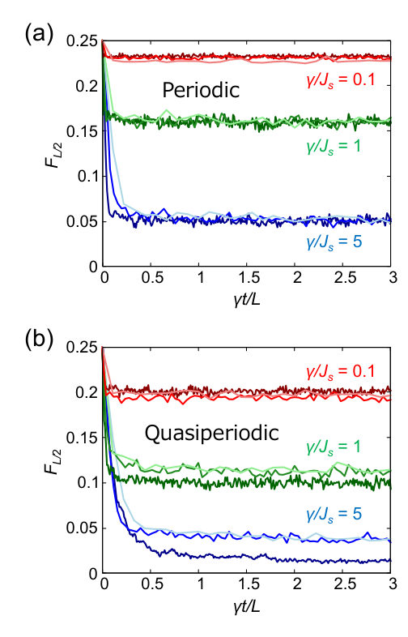
<figcaption class="paper-figure-caption"><b>Fig 3.</b> FIG. 2. Numerical results for the dynamics of fluctuations of the local particle number FL/2 at the (L/2)-th site. We set (a) Jℓ/Js = 1 in the periodic system and (b) Jℓ/Js = 0.4 in the quasiperiodic system. Light, medium, and dark colors correspond to L = 30, 50, and 100, respectively. The number of quantum trajectories is set to 500.</figcaption>
</figure>
<figure class="paper-figure-card">

<figcaption class="paper-figure-caption"><b>Fig 4.</b> FIG. 4. Spatial distribution of fluctuations of the local particle num- ber with respect to xi in physical space. We take (a) Jℓ/Js = 1 in the periodic system and (b) Jℓ/Js = 0.4 in the quasiperiodic system. The number of trajectories is set to 1000. The system size is set to L = 120, whose enlarged view is shown.</figcaption>
</figure>
<figure class="paper-figure-card">

<figcaption class="paper-figure-caption"><b>Fig 5.</b> FIG. 6. Spatial average of fluctuations of the local particle number in the quasiperiodic system resolved by perpendicular space V1 n with respect to measurement strengths. The inset shows the difference Fℓs −Fℓ2 between fluctuations corresponding to two different local environments. We take L = 120 and Jℓ/Js = 0.4, and the number of trajectories is set to 1000.</figcaption>
</figure>
</div>

<p><strong>Summary.</strong> This theoretical study examines how continuous quantum measurement affects particle number fluctuations in a free-fermion chain built on a Fibonacci lattice. The key finding is a crossover: the spatial pattern shifts from reflecting the system's long-range quasiperiodic order under weak monitoring to being dominated by local site environments under strong monitoring. This offers new insights into non-equilibrium dynamics in structured quantum matter.</p>
<p><strong>Why it may be interesting.</strong> This work is highly relevant as it explores non-equilibrium physics driven by quantum measurements in structured media, connecting concepts from open quantum systems to condensed matter phenomena like quasiperiodicity.</p>
<details>
<summary>Detailed structure</summary>
<p><strong>Main problem.</strong> The study investigates measurement-induced spatially nonuniform fluctuations of the local particle number within a quasiperiodic free-fermion chain.</p>
<p><strong>Main result.</strong> The paper demonstrates a crossover in fluctuation patterns: weak measurements reveal long-range quasiperiodic order, while strong measurements localize the distribution to site-specific environments.</p>
<p><strong>Method.</strong> Analysis utilizes Gaussian-state-based algorithms applied to continuous monitoring dynamics described by stochastic Schrödinger equations.</p>
<p><strong>Model / system.</strong> The system is a free-fermion chain modeled on a Fibonacci lattice (quasiperiodic structure), analyzed using both physical and perpendicular space representations.</p>
<p><strong>Key observables.</strong> Local particle number fluctuations ($\langle n_j^2 
angle - \langle n_j 
angle^2$) and connected correlation functions ($C_{i,j}$).</p>
<p><strong>Important parameters / regimes.</strong> Measurement strength ($\gamma$), which dictates the crossover between weak and strong measurement regimes.</p>
<p><strong>Assumptions / limitations.</strong> The analysis assumes the system consists of free fermions and employs Gaussian-state-based simulation techniques.</p>
<p><strong>Figures summary.</strong> Figures illustrate the Fibonacci chain construction, showing spatial distributions of local particle number fluctuations for periodic versus quasiperiodic systems under varying measurement strengths.</p>
<p><strong>Paper structure.</strong> The paper develops by first establishing the model on a quasiperiodic lattice, then analyzing the dynamics under continuous monitoring, culminating in the demonstration and characterization of the crossover phenomenon across different measurement regimes and observables.</p>
</details>
<details>
<summary>Abstract</summary>
<p>We study continuously monitored dynamics of a quasiperiodic free-fermion chain defined on a Fibonacci lattice. We focus on fluctuations of the local particle number, which exhibit a spatially uniform distribution in the unitary limit. Remarkably, we demonstrate that they exhibit a nonuniform spatial pattern originating from the quasiperiodic long-range order under continuous measurement. Furthermore, employing both physicaland perpendicular-space analyses, we elucidate that measurement-induced crossover emerges in fluctuations due to the interplay between the incommensurate modulation and the continuous measurement. While weak measurement yields a distribution reflecting the long-range spatial structure of the quasiperiodic system, an increase in measurement strength alters the distribution into one dominated by the local environment of each site. We also elucidate that the measurement-induced crossover emerges in other physical quantities such as connected correlation functions. These findings offer insights into nonequilibrium quasiperiodic phenomena emerging in continuously monitored dynamics.</p>
</details>
<p><sub><a href="#top">↑ back to top</a></sub></p>

<p><a id="paper-2607.05190"></a></p>
<h3 id="spectral-topology-induced-criticality-in-non-hermitian-fermionic-metals"><a href="http://arxiv.org/abs/2607.05190v1">Spectral-topology-induced criticality in non-Hermitian fermionic metals</a></h3>
<p><strong>Authors:</strong> Ayan Banerjee, Julius T. Gohsrich, Flore K. Kunst<br>
<strong>Type:</strong> theory · <strong>Category:</strong> statistical mechanics · <strong>PDF:</strong> <a href="https://arxiv.org/pdf/2607.05190v1">https://arxiv.org/pdf/2607.05190v1</a><br>
<strong>Analysis basis:</strong> full PDF text, analyzed in chunks
<strong>Topic relevance:</strong> 🔥 <code>driven-dissipative phase transition</code> <strong>4/5</strong> · 🔥 <code>non-equilibrium universality</code> <strong>4/5</strong> · <code>Kondo &amp; dissipative impurity</code> <strong>3/5</strong> · <code>methods for driven-dissipative</code> <strong>3/5</strong> · <code>non-equilibrium dynamics</code> <strong>3/5</strong> · <code>correlated / nonlocal dissipation</code> <strong>2/5</strong> · <code>entanglement &amp; information structure</code> <strong>2/5</strong> · <code>Frenkel-Kontorova</code> <strong>1/5</strong> · <code>Keldysh / 2PI / non-Gaussian methods</code> <strong>1/5</strong> · <code>analog quantum simulation</code> <strong>1/5</strong></p>
<div class="figure-strip-hint">↔ Scroll figures horizontally</div>
<div class="paper-figures-scroll">
<figure class="paper-figure-card">

<figcaption class="paper-figure-caption"><b>Fig 1.</b> FIG. 1. Spectral topology and dynamical topological in- dex. (a) Different complex spectra (blue, orange, and green curves) for different parameters (t1 = 6, t1 = 4.5 and t1 = 2, respectively) for the Hamiltonian in Eq. (2) with l = r = 3, t−1 = 1, t±2 = 0 and t±3 = ±1. The dynamical topological index is the difference between the number of maxima and number of minima in the upper half plane, and transitions occur when these numbers change. The extrema contributing to the dynamical topological index are highlighted by pink triangles, where the up-pointing and down-pointing triangles correspond to maxima and minima, respectively. The shaded regions contribute to the non-equilibrium steady...</figcaption>
</figure>
<figure class="paper-figure-card">

<figcaption class="paper-figure-caption"><b>Fig 2.</b> FIG. 2. Mechanisms changing the dynamical topological in- dex. The horizontal axis corresponds to k, the vertical axis to Im E(k), and the dashed horizontal line to the zero-axis Im E(k) = 0 as in Fig. 1(b). The minima contributing to the dynamical topological index are highlighted by pink down- pointing triangles. (a) Under a continuous parameter change, the minimum above zero (left) can touch the zero-axis (cen- ter), which corresponds to a non-simple zero marked by a pink cross, and can move below zero (right), increasing the dynam- ical topological index by one. In general, by tuning through a non-simple zero, the dynamical topological index can change. (b) Additionally in multi-band...</figcaption>
</figure>
<figure class="paper-figure-card">
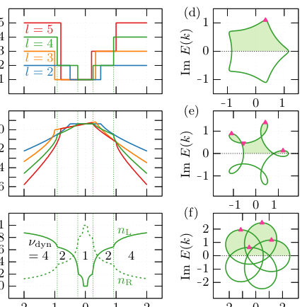
<figcaption class="paper-figure-caption"><b>Fig 3.</b> FIG. 3. Spectral topological phase transitions and trans- port phenomena in a generalized Hatano–Nelson model. (a) Dynamical topological index νdyn and central charge ceff as function of tl for different l, showing topological phase transi- tions at distinct transition points. The green-dashed vertical lines mark the hopping strengths tl at which the dynamical topological index for the model with l = 4 changes. These lines are also present in (b,d) to highlight qualitative changes at these hopping strengths due to these phase transitions for the model with l = 4. (b) Total current as a function of tl with same l as in (a), showing the non-analytic behavior at the same parameters where the...</figcaption>
</figure>
<figure class="paper-figure-card">
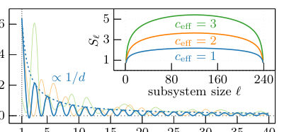
<figcaption class="paper-figure-caption"><b>Fig 4.</b> FIG. 4. Correlations and entanglement entropy. The sys- tem exhibits power-law correlations ∝1/d with distinct in- terference patterns as a function of distance d, indicating a gapless critical phase and scale invariance. We quadratically interpolate between the different integer d for better visibil- ity. Inset: Corresponding entanglement entropies Sℓshowing logarithmic scaling as function of subsystem size ℓand dis- tinct central charges. We have set t±1 = 1 ± t, t±2 = ±0.2, t±3 = ∓1.9, t±4 = ±1, with t = 11 (blue), t = 6 (orange), t = 1 (green).</figcaption>
</figure>
</div>

<p><strong>Summary.</strong> This work develops a topological index ($
u_{dyn}$) based on the complex energy spectrum of non-Hermitian fermionic metals. This index quantifies spectral topology by analyzing extrema in the imaginary part of the dispersion relation using Morse theory. The key finding is that this topological invariant dictates the nature and existence of non-equilibrium quantum criticality, linking single-particle band structure directly to many-body transport properties.</p>
<p><strong>Why it may be interesting.</strong> The connection between spectral topology derived from complex single-particle bands and macroscopic many-body phenomena like critical behavior is highly relevant for understanding open quantum systems where dissipation or gain are present, bridging concepts from condensed matter theory with non-equilibrium statistical mechanics.</p>
<details>
<summary>Detailed structure</summary>
<p><strong>Main problem.</strong> The central challenge is understanding how complex single-particle spectra govern universal many-body behavior, particularly in non-Hermitian systems that are intrinsically out-of-equilibrium.</p>
<p><strong>Main result.</strong> The authors establish a unified framework linking spectral geometry (via Morse theory applied to the complex spectrum) to many-body observables, showing that non-Hermitian quantum criticality is controlled by emergent imaginary Fermi surfaces.</p>
<p><strong>Method.</strong> They introduce a symmetry-protected dynamical topological index ($
u_{dyn}$) derived from analyzing extrema of $   ext{Im } E(k)$ using tools from algebraic topology (Morse theory).</p>
<p><strong>Model / system.</strong> The study focuses on non-interacting, one-dimensional fermionic metals described by tight-binding Hamiltonians, including the Hatano–Nelson and anisotropic SSH models.</p>
<p><strong>Key observables.</strong> Dynamical topological index ($
u_{dyn}$), emergent imaginary Fermi surface, gapless modes with logarithmic entanglement scaling, and spectral winding.</p>
<p><strong>Important parameters / regimes.</strong> Hopping strengths ($t_j$), gain/loss parameters ($\gamma$), coupling constants ($\kappa$), and the momentum $k$.</p>
<p><strong>Assumptions / limitations.</strong> Initial analyses assume the function $   ext{Im } E(k)$ is a Morse function with simple zeros; generalizations must account for non-diagonalizable Hamiltonians at exceptional points.</p>
<p><strong>Figures summary.</strong> Figures illustrate complex spectra, the imaginary part of the dispersion ($    ext{Im } E(k)$), and how varying parameters (like $\gamma$ or $\kappa$) causes changes in $
u_{dyn}$ by altering spectral extrema or inducing removable discontinuities.</p>
<p><strong>Paper structure.</strong> The paper progresses from defining the problem in non-Hermitian systems to introducing the dynamical topological index ($
u_{dyn}$) via Morse theory. It then applies this framework to various models (Hatano–Nelson, SSH) to demonstrate how $
u_{dyn}$ quantifies non-equilibrium quantum criticality and relates it to the number of Fermi points.</p>
</details>
<details>
<summary>Abstract</summary>
<p>Quantum matter emerges from the interplay of fluctuations, topology, and entanglement, which - in equilibrium - governs quantized transport, universal criticality, and topological classification. Non-Hermitian systems, widely explored in platforms ranging from electric circuits to photonics, are intrinsically out-of-equilibrium, and display fundamentally new phenomena, including complex spectra, spectral winding, exceptional topology, and non-unitary dynamics. A central challenge is understanding how the complex single-particle spectrum governs universal many-body behavior. We introduce a symmetry-protected dynamical topological index derived directly from the complex spectrum. Through the lens of algebraic topology, more specifically Morse theory, we identify critical points in the spectrum with topological defects, whose curvature and stability are protected under continuous deformations. This links spectral geometry to many-body observables, unifying non-Hermitian band topology, entanglement, and transport. We demonstrate that non-Hermitian quantum criticality in non-interacting systems is controlled by gain-and-loss-selected non-equilibrium steady states, which dynamically generate an emergent imaginary Fermi surface whose Fermi points host scale-invariant gapless modes with logarithmic entanglement scaling and algebraic correlations. Our work establishes a unified framework for non-Hermitian quantum matter, connecting spectral topology to Morse theory, revealing a topological foundation of non-equilibrium quantum criticality.</p>
</details>
<p><sub><a href="#top">↑ back to top</a></sub></p>

<p><a id="paper-2607.05303"></a></p>
<h3 id="energetic-protection-monotonicity-and-switching-far-from-equilibrium"><a href="http://arxiv.org/abs/2607.05303v1">Energetic Protection, Monotonicity and Switching Far from Equilibrium</a></h3>
<p><strong>Authors:</strong> Uğur Çetiner<br>
<strong>Type:</strong> theory · <strong>Category:</strong> statistical mechanics · <strong>PDF:</strong> <a href="https://arxiv.org/pdf/2607.05303v1">https://arxiv.org/pdf/2607.05303v1</a><br>
<strong>Analysis basis:</strong> full PDF text, analyzed in chunks
<strong>Topic relevance:</strong> 🔥 <code>non-equilibrium dynamics</code> <strong>4/5</strong> · 🔥 <code>non-equilibrium universality</code> <strong>4/5</strong> · <code>driven-dissipative phase transition</code> <strong>3/5</strong> · <code>methods for driven-dissipative</code> <strong>3/5</strong> · <code>Keldysh / 2PI / non-Gaussian methods</code> <strong>2/5</strong> · <code>correlated / nonlocal dissipation</code> <strong>2/5</strong> · <code>Kondo &amp; dissipative impurity</code> <strong>1/5</strong> · <code>analog quantum simulation</code> <strong>1/5</strong> · <code>entanglement &amp; information structure</code> <strong>1/5</strong> · <code>exotic spin models in light-matter</code> <strong>1/5</strong> · <code>scars &amp; prethermalization</code> <strong>1/5</strong></p>
<div class="figure-strip-hint">↔ Scroll figures horizontally</div>
<div class="paper-figures-scroll">
<figure class="paper-figure-card">

<figcaption class="paper-figure-caption"><b>Fig 1.</b> Figure 1. Single-edge driving yields either a mono- tonic response or energetic protection. (A) A four- state Markov process is driven out of equilibrium by scaling the single transition 1 →3 as ℓ(1 →3) = m ℓeq(1 →3) (red), with every other rate held at its equilibrium value. (B) The eight spanning trees rooted at vertex 1; the two trees T#6 and T#7 (magenta) compete to set the response. (C–E) The nor- malized response K24(m) ≡(π2/π4)/(πeq 2 /πeq 4 ) is fixed by the relative weights of these two trees: it increases monotonically when w(T#7) &gt; w(T#6) (C), decreases monotonically when w(T#7) &lt; w(T#6) (E), and stays pinned at K24(m) = 1 for all m when w(T#7) = w(T#6) (D), so that the ratio...</figcaption>
</figure>
<figure class="paper-figure-card">
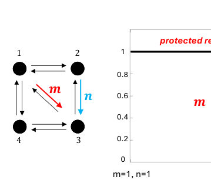
<figcaption class="paper-figure-caption"><b>Fig 2.</b> Figure 2. A thermodynamic switch in a four-state Markov process. The network of Fig. 1A is driven by two energetic edges, 1 →3 (factor m, red) and 2 →3 (factor n, cyan), starting from an equilibrium configuration that sat- isfies the protection condition w(T#6) = w(T#7) (rates in Table S2). The black curve traces the response K24 as a two-stage protocol advances along the horizontal axis. In the protected region (first stage: n = 1 held fixed, m ramped from 1 to 100) protection pins π2/π4 to its equilibrium value, so K24 = 1 throughout. In the switching region (second stage: m = 100 held fixed, n ramped through the edge 2 →3) the response drops substantially. Energetic protection of the...</figcaption>
</figure>
<figure class="paper-figure-card">
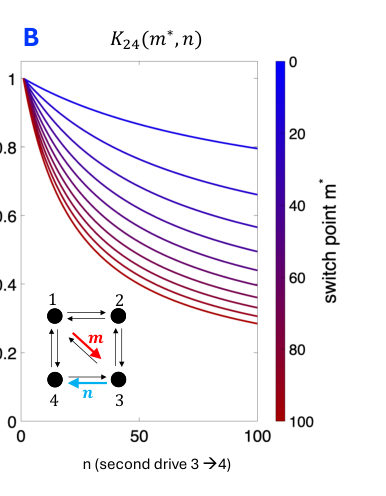
<figcaption class="paper-figure-caption"><b>Fig 3.</b> Figure 3. Whether the second-stage switch is protocol-independent depends on the choice of sec- ond energetic edge. In both panels the first edge 1 →3 is ramped to a stopping (switch) value m∗and then held fixed while the second edge is ramped through n; curves are coloured by m∗, and the insets show the two energetic edges (m red, n cyan). Both panels use the same equilibrium rates, which satisfy the protection condition w(T#6) = w(T#7) with regard to the first energetic edge (1 →3), and differ only in which edge carries the second drive (Table S3). (A) Sec- ond edge 2 →3. Energetic protection extends from the single slice n = 1 to the full identity W(n) = 0 for all n (Supplement), so the...</figcaption>
</figure>
<figure class="paper-figure-card">
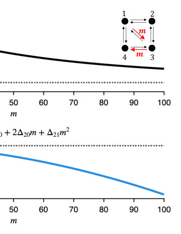
<figcaption class="paper-figure-caption"><b>Fig 4.</b> Figure 4. Two coupled energetic edges produce a sin- gle nonmonotonic bump. The energetic edges 1 →3 and 3 →4 are perturbed together by a common factor m from an equilibrium configuration (m = 1; rates in Ta- ble S4). (A) The normalized response K24(m) rises and then falls, with a single interior maximum. (B) Its slope obeys sgn K′ 24(m) = sgn N(m) with N(m) = ∆10+2∆20m+∆21m2</figcaption>
</figure>
</div>

<p><strong>Summary.</strong> This work develops a theoretical framework using graph theory to analyze how information processing constraints behave when systems are driven far from equilibrium. The central finding is 'energetic protection,' which reveals new, non-equilibrium invariances that can stabilize system ratios against external fluctuations. This suggests fundamental limitations and programmable control mechanisms in open, non-equilibrium physical and biological systems.</p>
<p><strong>Why it may be interesting.</strong> It provides a powerful, graph-theoretic framework to find robust, non-equilibrium invariants that govern functional logic in physical systems, extending concepts of thermodynamic constraint into active matter or driven quantum/classical processes.</p>
<details>
<summary>Detailed structure</summary>
<p><strong>Main problem.</strong> The study investigates how information-processing constraints, typically defined by equilibrium ratios (Boltzmann factors), persist or change when a physical system is driven far from thermodynamic equilibrium.</p>
<p><strong>Main result.</strong> The authors identify 'energetic protection,' a mechanism where certain steady-state ratios remain exactly locked to their equilibrium values despite arbitrary driving forces, provided specific algebraic equalities among spanning-tree weights hold.</p>
<p><strong>Method.</strong> The analysis employs graph theory applied to continuous-time Markov processes, using the arboreal distribution derived from spanning trees to calculate non-equilibrium steady states and response functions.</p>
<p><strong>Model / system.</strong> The model is a finite-state Markov process represented by a directed graph where transitions are governed by rates. The system's dynamics are analyzed by perturbing specific transition rates (energetic edges) away from equilibrium.</p>
<p><strong>Key observables.</strong> Normalized ratio of steady-state probabilities ($K_{ij}(m)$), which measures the deviation from equilibrium performance, and the existence/value of 'energetic protection.'</p>
<p><strong>Important parameters / regimes.</strong> The driving strength parameter $m$ (which scales transition rates) and the specific algebraic equalities among spanning-tree weights.</p>
<p><strong>Assumptions / limitations.</strong> The analysis assumes the system can be modeled by a continuous-time Markov process on a discrete state space, and that the response function can be analyzed via path actions derived from spanning trees.</p>
<p><strong>Figures summary.</strong> Figures illustrate how the normalized response $K_{ij}(m)$ behaves (monotonicity, protection) based on relationships between spanning tree weights; later figures show the construction of a 'thermodynamic switch' using two energetic edges.</p>
<p><strong>Paper structure.</strong> The paper progresses from establishing equilibrium constraints to analyzing single-edge driving (showing monotonicity or protection), then developing the concept of the 'energetic switch' using two coupled edges, and finally deriving the exact mathematical conditions for these invariances far from equilibrium.</p>
</details>
<details>
<summary>Abstract</summary>
<p>At equilibrium, the ratio of two steady-state probabilities is a Boltzmann factor, set by a free-energy difference. Such ratios are the natural, normalization-independent readouts of both thermodynamics and information processing, and are often used as a measure of fidelity in biophysical systems. What becomes of these ratios once a system is driven from equilibrium, where the Boltzmann factor no longer holds? Representing Markov processes as graphs and their steady states as averages over a distribution on spanning trees, the \emph{arboreal distribution}, we track the ratio $π_i/π_j$ under driving along \emph{energetic edges}, where detailed balance is broken, relative to its equilibrium value. Our central finding is that a chosen ratio can stay exactly locked to its equilibrium value arbitrarily far from equilibrium, a phenomenon we call \emph{energetic protection}, whenever an algebraic equality between spanning-tree weights holds. Just as detailed balance constrains rates around cycles, energetic protection constrains weights across trees, providing a new mechanism for robustness against fluctuations in the driving force, such as variations in ATP concentration. Away from this equality, single-edge driving collapses the response onto two arboreal coefficients and forces it to be monotonic, so nonmonotonic single-edge control is impossible at any strength. With two energetic edges, protection and monotonicity combine into a \emph{thermodynamic switch} that holds a function at its equilibrium value for as long as desired and releases it sharply. Equilibrium is known for the limits it places on information processing. We show that new constraints, both no-go principles and exact invariances, survive far from equilibrium. These results reveal how the localization of energy expenditure governs the functional logic of nonequilibrium systems in physics and biology.</p>
</details>
<p><sub><a href="#top">↑ back to top</a></sub></p>

<p><a id="paper-2607.04659"></a></p>
<h3 id="krylov-complexity-mode-resolved-complexity-and-entanglement-entropy-across-phase-transitions-in-the-non-hermitian-extended-su-schrieffer-heeger-model"><a href="http://arxiv.org/abs/2607.04659v1">Krylov complexity, mode-resolved complexity and entanglement entropy across phase transitions in the non-Hermitian extended Su-Schrieffer-Heeger model</a></h3>
<p><strong>Authors:</strong> Ling-Feng Zhang, Wing Chi Yu<br>
<strong>Type:</strong> theory · <strong>Category:</strong> statistical mechanics · <strong>PDF:</strong> <a href="https://arxiv.org/pdf/2607.04659v1">https://arxiv.org/pdf/2607.04659v1</a><br>
<strong>Analysis basis:</strong> full PDF text, analyzed in chunks
<strong>Topic relevance:</strong> 🔥 <code>driven-dissipative phase transition</code> <strong>4/5</strong> · 🔥 <code>entanglement &amp; information structure</code> <strong>4/5</strong> · <code>analog quantum simulation</code> <strong>3/5</strong> · <code>methods for driven-dissipative</code> <strong>3/5</strong> · <code>non-equilibrium universality</code> <strong>3/5</strong> · <code>correlated / nonlocal dissipation</code> <strong>2/5</strong> · <code>non-equilibrium dynamics</code> <strong>2/5</strong> · <code>Keldysh / 2PI / non-Gaussian methods</code> <strong>1/5</strong> · <code>Kondo &amp; dissipative impurity</code> <strong>1/5</strong></p>
<div class="figure-strip-hint">↔ Scroll figures horizontally</div>
<div class="paper-figures-scroll">
<figure class="paper-figure-card">

<figcaption class="paper-figure-caption"><b>Fig 1.</b> FIG. 1. (a) Schematic diagram of the extended SSH chain with the unit cell constructed by site A and site B. The intra-cell (inter-cell) hopping ta (tb) is denoted by the black solid (dashed) line. The blue and red curves denote the next- nearest-neighbor hopping terms tc and td, respectively. The red (blue) circles denote sites with opposite on-site imaginary potential ±iγ. (b) The spread complexity of the Hermitian extended SSH model on the tc-td plane with ta = tb = −1. Wn denotes the phase characterized by a winding number of n. The red, blue and black dashed lines are the topological phase transition boundaries and the colors indicate the num- ber of gap-closing points. (c) The spread...</figcaption>
</figure>
<figure class="paper-figure-card">
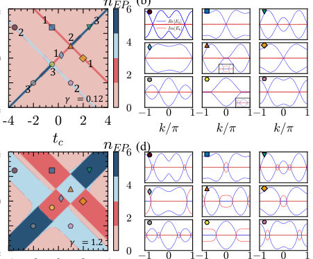
<figcaption class="paper-figure-caption"><b>Fig 2.</b> FIG. 2. Distribution of exceptional points in the tc-td plane for (a) weak (γ = 0.12) and (c) moderate (γ = 1.2) non- Hermiticity. The markers lie at the phase transition bound- aries of the Hermitian extended SSH model (γ = 0). The numbers adjacent to these markers denote the number of gap- closing points in momentum space. Panels (b) and (d) dis- play the real (blue curves) and imaginary (red curves) parts of the energy spectra in momentum space, corresponding to the parameters indicated by markers in panels (a) and (c), respectively. The gray dotted line represents the zero-energy reference level (E = 0). The insets in the bottom two panels of the middle column in (b) show a zoom-in of...</figcaption>
</figure>
<figure class="paper-figure-card">

<figcaption class="paper-figure-caption"><b>Fig 3.</b> FIG. 3. (a) The spread complexity of the non-Hermitian ex- tended SSH model with an imaginary staggered chemical po- tential γ = 1.2 on the tc-td plane. (b) The ratio of imaginary eigenvalues over the whole spectrum. (c) The derivative of spread complexity (the ratio of imaginary eigenvalues) over tc is denoted by the blue (red) line with circles, along the line td = 1.21. The background denotes the number of exceptional points [see Fig. 2(c)].</figcaption>
</figure>
<figure class="paper-figure-card">

<figcaption class="paper-figure-caption"><b>Fig 4.</b> FIG. 4. (a),(b) The long-time spread complexity on tc-td plane for the Hermitian and non-Hermitian extended SSH model with γ = 1.2, respectively. (c),(d) The derivative of long-time complexity and half-chain entanglement entropy with respect to tc for the Hermitian and non-Hermitian ex- tended SSH model along the line td = 1.21, respectively. The background denotes the number of exceptional points.</figcaption>
</figure>
<figure class="paper-figure-card">
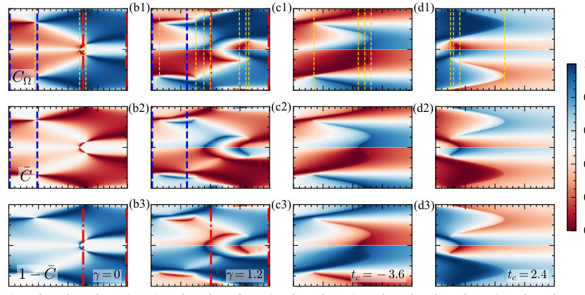
<figcaption class="paper-figure-caption"><b>Fig 5.</b> FIG. 5. The top, middle, and bottom panels display the momentum-space distributions of CΩ, ¯C and 1 −¯C for td = 1.21, respectively. The yellow dashed lines in (a1) indicate the gap-closing points, and in (b1, c1, d1) indicate the parameters in which nEP changes. In the first column, the blue (red) dashed lines denote the boundaries where CΩ≈¯C (CΩ≈1 −¯C). In the second (third) column, CΩ≈¯C (CΩ≈1 −¯C).</figcaption>
</figure>
</div>

<p><strong>Summary.</strong> This paper analyzes phase transitions in a non-Hermitian extended SSH model by applying advanced quantum complexity measures like spread complexity and entanglement entropy. The authors demonstrate that these information metrics serve as powerful diagnostic tools, successfully signaling topological phase boundaries during both ground state preparation and time evolution. This provides a theoretical framework for using quantum information to characterize complex many-body physics in open systems.</p>
<p><strong>Why it may be interesting.</strong> This work directly connects concepts from topology and non-Hermitian physics with quantitative tools from quantum information theory, providing robust diagnostics for phase changes in open or driven systems relevant to AMO research.</p>
<details>
<summary>Detailed structure</summary>
<p><strong>Main problem.</strong> The study investigates how quantum information measures can effectively signal phase transitions within non-Hermitian quantum systems.</p>
<p><strong>Main result.</strong> Both spread complexity and entanglement entropy successfully detect phase transitions in the extended SSH model, with mode-resolved complexity providing detailed insight into the critical modes involved.</p>
<p><strong>Method.</strong> The analysis employs advanced quantum information diagnostics, including Krylov/spread complexity and entanglement entropy, applied to two dynamical protocols: ground state preparation and long-time evolution.</p>
<p><strong>Model / system.</strong> The system is the extended Su-Schrieffer-Heeger (SSH) model modified with next-nearest-neighbor hoppings and an imaginary staggered chemical potential, making it non-Hermitian.</p>
<p><strong>Key observables.</strong> Krylov/Spread complexity, mode-resolved complexity, entanglement entropy ($S$), and their long-time averages ($ar{C}, ar{S}$).</p>
<p><strong>Important parameters / regimes.</strong> The hopping parameters ($t_a, t_b, t_c, t_d$) and the non-Hermiticity strength ($\gamma$). The analysis focuses on topological phase boundaries.</p>
<p><strong>Assumptions / limitations.</strong> The analysis relies on mapping the system dynamics onto quantum information measures; one key finding is that saturation behavior in $ar{S}$ mirrors that of $ar{C}$.</p>
<p><strong>Figures summary.</strong> Figures illustrate the extended SSH chain structure, map out topological phase boundaries using spread complexity on parameter planes ($t_c$-$t_d$), and show the distribution of exceptional points.</p>
<p><strong>Paper structure.</strong> The paper systematically introduces the non-Hermitian model, applies various quantum information measures (complexity, entanglement entropy) to two distinct dynamical protocols, analyzes how these measures signal transitions across topological boundaries, and finally uses mode-resolved complexity to pinpoint characteristic modes.</p>
</details>
<details>
<summary>Abstract</summary>
<p>We investigate phase transitions in the extended Su-Schrieffer-Heeger (SSH) model with next-nearest-neighbor hoppings and an imaginary staggered chemical potential. In the presence of small non-Hermiticity, exceptional points emerge in pairs from the gap-closing momenta near the topological phase boundaries of the Hermitian limit. Utilizing the Krylov spread complexity and entanglement entropy, we analyze two dynamical protocols: (i) preparing the non-Hermitian ground state via a unitary transformation, and (ii) evolving the system under the non-Hermitian Hamiltonian. We show that the spread complexity, and long-time spread complexity as well as entanglement entropy can effectively signal phase transitions in the first and second protocols, respectively. To unravel the detailed structure of the transitions, we introduce the momentum-resolved complexity that identifies the characteristic modes and tracks their evolution with the driving parameter. In the regime where the system possesses a purely imaginary spectrum, we further identify dynamical phases based on the saturation behavior of the spread complexity. The entanglement entropy is also found to exhibit similar saturation behavior, thereby providing a more experimentally accessible probe of the dynamical phases.</p>
</details>
<p><sub><a href="#top">↑ back to top</a></sub></p>

<p><a id="paper-2607.04075"></a></p>
<h3 id="wei-norman-approach-for-non-hermitian-driven-spin-math131math-systems-and-its-application-to-defect-freezing"><a href="http://arxiv.org/abs/2607.04075v1">Wei-Norman approach for non-Hermitian driven spin-$S$ systems and its application to defect freezing</a></h3>
<p><strong>Authors:</strong> Mingwei Meng, Chen Sun<br>
<strong>Type:</strong> theory · <strong>Category:</strong> other · <strong>PDF:</strong> <a href="https://arxiv.org/pdf/2607.04075v1">https://arxiv.org/pdf/2607.04075v1</a><br>
<strong>Analysis basis:</strong> full PDF text, analyzed in chunks
<strong>Topic relevance:</strong> 🔥 <code>methods for driven-dissipative</code> <strong>4/5</strong> · <code>analog quantum simulation</code> <strong>3/5</strong> · <code>driven-dissipative phase transition</code> <strong>3/5</strong> · <code>exotic spin models in light-matter</code> <strong>3/5</strong> · <code>non-equilibrium dynamics</code> <strong>3/5</strong> · <code>non-equilibrium universality</code> <strong>2/5</strong> · <code>spintronics-quantum-optics interface</code> <strong>2/5</strong> · <code>Keldysh / 2PI / non-Gaussian methods</code> <strong>1/5</strong> · <code>Kondo &amp; dissipative impurity</code> <strong>1/5</strong> · <code>correlated / nonlocal dissipation</code> <strong>1/5</strong></p>
<div class="figure-strip-hint">↔ Scroll figures horizontally</div>
<div class="paper-figures-scroll">
<figure class="paper-figure-card">

<figcaption class="paper-figure-caption"><b>Fig 1.</b> FIG. 1. Sketches of lattices of (a) the PT -SSH model, (b) its S = 1 extension, and (c) its S = 3/2 extension. A, B, C and D stand for sites in different sublattices, a solid line presents intracell or intercell hoppings between sites, and a waved line presents gain or loss at a given site. In each sketch four unit cells are plotted, with a dashed line encircling a specific unit cell, and only parameters within this cell and between it and its adjacent cell to the right are shown (parameters in the whole lattice can be read off by translational symmetry). The parameters of the S = 1 and S = 3/2 models are related to those of the S = 1/2 model as: v1 = √</figcaption>
</figure>
<figure class="paper-figure-card">

<figcaption class="paper-figure-caption"><b>Fig 2.</b> FIG. 2. Excitation probability in the adiabatic limit pk,S(b →0) vs. momentum k by Eq. (34) for the spin-S PT -SSH model under a quench for four different S from S = 1/2 to S = 2. (a) at γ/w = 0.5; (b) same as (a) but zoomed into a region near k = 0; (c) at γ/w = 1.5.</figcaption>
</figure>
<figure class="paper-figure-card">

<figcaption class="paper-figure-caption"><b>Fig 3.</b> Fig. 3(a) shows nex,S(b →0) vs. γ/w by Eq. (40) for four different S from S = 1/2 to S = 2. As in the k-resolved result, a curve with a larger S is always above another curve with a smaller S. For each value of S, nex,S(b →0) increases monotonically with γ, and it experiences a sin- gularity at γ = w where the slope of the curve (namely, ∂nex,S(b →0)/∂γ) changes discontinuously. (Due to the arcsin term in Eq. (40), this slope diverges as γ →w−; it is finite as γ →w+.) The physical reason of this singular- ity is the same as in the S = 1/2 case, namely, γ = w this is the critical point between the two cases that a portion of or all of the k sectors traverse the PT -broken region. Using P...</figcaption>
</figure>
<figure class="paper-figure-card">

<figcaption class="paper-figure-caption"><b>Fig 4.</b> FIG. 3. Excitation density in the spin-S PT -SSH model under a quench. (a) Excitation density nex,S(b →0) vs. γ/w by Eq. (40) for four different S from S = 1/2 to S = 2. (b) The solid lines are the same as in (a) but for small γ/w, and the dashed lines are linear approximation by Eq. (41). (c) Excitation density above the frozen defect ∆nex,S vs. quench rate b at w = 1, γ = 0.3 for S = 1/2 and S = 2. The solid lines are by the approximate analytical expression Eq. (40), and the dots are from exact numerical integrations.</figcaption>
</figure>
</div>

<p><strong>Summary.</strong> This paper introduces the Wei-Norman approach as an elegant method to find exact analytical solutions for the time evolution of complex spin-$S$ quantum systems driven by non-Hermitian fields. By applying this to the PT-SSH model, the authors predict that defect freezing—a breakdown of adiabaticity—occurs specifically when the system traverses higher-order exceptional points during a quench. This offers testable predictions for platforms like photonic lattices.</p>
<p><strong>Why it may be interesting.</strong> This work provides a powerful, accessible analytical tool (Wei-Norman approach) for tackling non-Hermitian dynamics in multi-level systems, linking abstract mathematical techniques directly to observable physical phenomena like topological transitions and excitation singularities.</p>
<details>
<summary>Detailed structure</summary>
<p><strong>Main problem.</strong> The primary challenge addressed is finding exact analytical solutions for nonadiabatic dynamics in complex, time-dependent, non-Hermitian quantum systems.</p>
<p><strong>Main result.</strong> The authors developed the Wei-Norman approach to analytically solve spin-$S$ evolution operators using Jacobi polynomials, and applied this to predict defect freezing across higher-order exceptional points (EPs) in PT-symmetric models.</p>
<p><strong>Method.</strong> The core method is the Wei-Norman approach, which allows expressing the time evolution operator as a product of exponentials derived from Lie algebra structures, simplifying calculations for multi-level systems.</p>
<p><strong>Model / system.</strong> The study focuses on spin-$S$ quantum systems driven by general non-Hermitian Hamiltonians. A key application is the PT-symmetric Su-Schrieffer-Heeger (PT-SSH) model, which can be realized in photonic lattices or electric circuits.</p>
<p><strong>Key observables.</strong> Matrix elements of the evolution operator, momentum-resolved excitation probabilities, and total excitation densities.</p>
<p><strong>Important parameters / regimes.</strong> The non-Hermiticity parameter ($\gamma$), the quench rate ($b$), and the spin quantum number ($S$).</p>
<p><strong>Assumptions / limitations.</strong> The method assumes the Hamiltonian structure belongs to $\mathfrak{su}(2)$ algebra; solvability is shown by reducing the problem to a known solvable two-level model.</p>
<p><strong>Paper structure.</strong> The paper first introduces the general Wei-Norman framework for spin-$S$ systems, showing its connection to $S=1/2$ via Jacobi polynomials. It then applies this machinery to analyze the PT-SSH model under linear quenches to study defect freezing phenomena.</p>
</details>
<details>
<summary>Abstract</summary>
<p>In the theoretical study of nonequilibrium non-Hermitian systems, obtaining exact analytical solutions for their nonadiabatic dynamics is highly desirable yet often challenging. In this work, we identify a class of non-Hermitian quantum systems where this difficulty can be substantially reduced. Employing the Wei-Norman approach, we show that for a spin-$S$ subject to a general non-Hermitian time-dependent drive, the matrix elements of the evolution operator can be expressed in closed analytical forms (via Jacobi polynomials) in terms of the corresponding spin-$1/2$ model. This approach is straightforward and accessible to nonspecialists in Lie algebra. As an application, we investigate a specific nonequilibrium non-Hermitian phenomenon known as defect freezing, i.e., the existence of excitations in the adiabatic limit, in spin-$S$ extensions of the $\mathcal{PT}$-symmetric Su-Schrieffer-Heeger model under linear quenches. We derive exact analytical expressions for the momentum-resolved excitation probabilities and the total excitation densities. Our results reveal that defect freezing occurs exclusively in momentum sectors that traverse the $\mathcal{PT}$-symmetry-broken region -- and thus pass through a pair of higher-order exceptional points (EPs) -- during the quench; notably, the excitation density exhibits a singularity at a critical value of the non-Hermiticity parameter. This work enriches the analytical toolkit for nonadiabatic dynamics in multi-level non-Hermitian systems and provides quantitative, testable predictions for defect freezing across higher-order EPs, possibly accessible on platforms such as electric circuit networks and photonic lattices.</p>
</details>
<p><sub><a href="#top">↑ back to top</a></sub></p>

<p><a id="paper-2607.04682"></a></p>
<h3 id="all-optical-control-of-coherent-perfect-absorption-via-frequency-conversion"><a href="http://arxiv.org/abs/2607.04682v1">All-optical control of coherent perfect absorption via frequency conversion</a></h3>
<p><strong>Authors:</strong> Rikizo Ikuta, Hirokazu Kobayashi, Hiroki Takahashi<br>
<strong>Type:</strong> experiment · <strong>Category:</strong> other · <strong>PDF:</strong> <a href="https://arxiv.org/pdf/2607.04682v1">https://arxiv.org/pdf/2607.04682v1</a><br>
<strong>Analysis basis:</strong> full PDF text, analyzed in chunks
<strong>Topic relevance:</strong> 🔥 <code>correlated / nonlocal dissipation</code> <strong>4/5</strong> · <code>driven-dissipative phase transition</code> <strong>3/5</strong> · <code>interference shaping light</code> <strong>3/5</strong> · <code>quantum optics experiment</code> <strong>3/5</strong> · <code>Tavis-Cummings &amp; cavity-many-emitter</code> <strong>2/5</strong> · <code>methods for driven-dissipative</code> <strong>2/5</strong> · <code>non-equilibrium universality</code> <strong>2/5</strong> · <code>analog quantum simulation</code> <strong>1/5</strong> · <code>correlated cavity matter</code> <strong>1/5</strong> · <code>non-equilibrium dynamics</code> <strong>1/5</strong></p>
<div class="figure-strip-hint">↔ Scroll figures horizontally</div>
<div class="paper-figures-scroll">
<figure class="paper-figure-card">
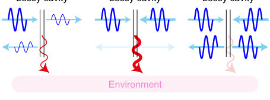
<figcaption class="paper-figure-caption"><b>Fig 1.</b> FIG. 1. Concept of FC-CPA, based on a two-sided Fabry- Pérot cavity with frequency-conversion-induced optical loss. (a) Implementation of a lossy FP cavity using frequency con- version inside the cavity. The signal light is injected into the lossy cavity acting as a BS from (b) one side, (c) both sides with identical phase, and (d) both sides with a π-phase dif- ference between the inputs.</figcaption>
</figure>
<figure class="paper-figure-card">
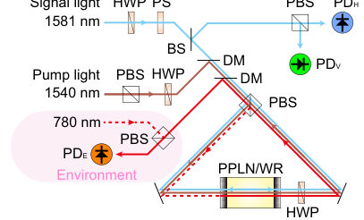
<figcaption class="paper-figure-caption"><b>Fig 2.</b> FIG. 2. Experimental setup. The cyan and red solid lines indicate the signal light at 1581 nm and frequency-converted light at 780 nm, respectively. The red dashed line indicates the externally injected environmental light at 780 nm. Light beams at different wavelengths are combined and separated using dichroic mirrors (DMs). Details are provided in the main text.</figcaption>
</figure>
<figure class="paper-figure-card">
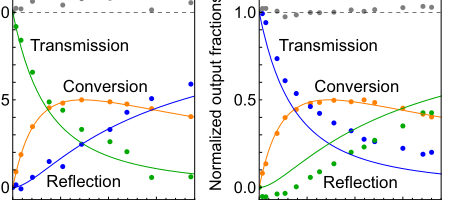
<figcaption class="paper-figure-caption"><b>Fig 3.</b> FIG. 4. Pump-power dependence of the transmission, reflec- tion, and conversion fractions. Blue, green, and orange data were measured at PDH, PDV, and PDE, respectively. The gray points show the sum of the transmission, reflection, and conversion fractions. Signal light is input from (a) cw direc- tion, and (b) ccw direction.</figcaption>
</figure>
<figure class="paper-figure-card">
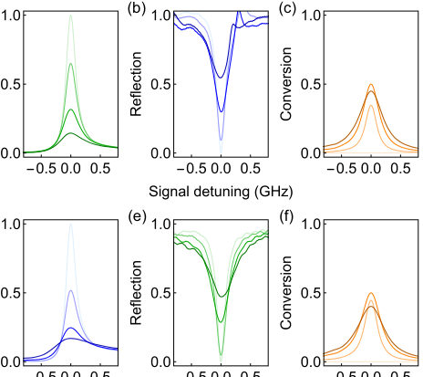
<figcaption class="paper-figure-caption"><b>Fig 4.</b> FIG. 3. Normalized observed responses from the FC-CPA for input from either cw or ccw direction. The blue, green, and orange colors denote the detector channels PDH, PDV, and PDE, respectively, corresponding to the colors used in Fig. 2. Darker colors correspond to higher pump powers. Spectra of (a) transmission, (b) reflection, and (c) conversion are shown for the signal input in the cw direction measured at pump powers of 0 mW, 21 mW, 72 mW, and 145 mW. (d), (e), and (f) show the corresponding spectra for the ccw direction mea- sured at the pump powers of 0 mW, 39 mW, 110 mW, and 180 mW.</figcaption>
</figure>
<figure class="paper-figure-card">

<figcaption class="paper-figure-caption"><b>Fig 5.</b> FIG. 5. FC-CPA at the pump power of 45 mW using signal light incident from both directions. The amount of absorption from the main system (cyan) into the environment (orange) reaches approximately 92 %, which is not achieved when the signal is injected from either the cw or ccw direction alone.</figcaption>
</figure>
</div>

<p><strong>Summary.</strong> The paper presents an all-optical platform for controlling Coherent Perfect Absorption (CPA) by utilizing frequency conversion within a lithium niobate waveguide. By coupling the signal field's loss channel to a non-resonant environmental mode, the system achieves tunable absorption up to 92%. Furthermore, injecting light into this environmental mode allows for active enhancement or suppression of the absorption process.</p>
<p><strong>Why it may be interesting.</strong> This work is highly relevant as it demonstrates a method for actively controlling dissipation in optical systems using nonlinear optics, which has parallels to engineered loss channels studied in open quantum systems theory and cavity QED.</p>
<details>
<summary>Detailed structure</summary>
<p><strong>Main problem.</strong> The primary goal is to achieve all-optically controllable Coherent Perfect Absorption (CPA), overcoming the limitation of conventional CPA which relies on fixed material loss.</p>
<p><strong>Main result.</strong> The authors demonstrated a frequency-conversion-based platform where absorption can be controlled by tuning the pump light and injecting an external environmental field, achieving up to 92% absorption.</p>
<p><strong>Method.</strong> The experiment uses a periodically poled lithium niobate waveguide resonator placed in a cavity to induce effective loss via nonlinear frequency conversion from a signal beam to an environmental mode.</p>
<p><strong>Model / system.</strong> The system is modeled as a two-port beamsplitter coupled through frequency conversion. The control mechanism involves coupling the resonant signal field ($\lambda = 1581 	ext{ nm}$) to a non-resonant environmental mode ($\lambda_e = 780 	ext{ nm}$) using a pump beam ($\lambda_p = 1540 	ext{ nm}$).</p>
<p><strong>Key observables.</strong> Transmission, reflection, and converted-light spectra; absorption efficiency (up to 92%); dependence of absorption on relative phase between counterpropagating signals.</p>
<p><strong>Important parameters / regimes.</strong> Pump power, environmental field amplitude ($\alpha_{e,	ext{in}}$), cavity detuning ($\Delta_c$), and coupling constants.</p>
<p><strong>Assumptions / limitations.</strong> The analysis treats fields as classical complex amplitudes; for initial derivations, internal loss was assumed zero.</p>
<p><strong>Figures summary.</strong> Figures illustrate the concept diagram (Fig. 1) and experimental setup (Fig. 2). Subsequent figures show pump-power dependence of output spectra (Fig. 3, 4), high absorption with two-sided input (Fig. 5), phase control (Fig. 6), and enhancement/suppression via environmental injection (Fig. 7).</p>
<p><strong>Paper structure.</strong> The paper progresses from establishing the concept of FC-CPA using frequency conversion to demonstrate tunable loss, then details measurements showing high absorption with two-sided input, and finally extends the model to show active control (enhancement/suppression) by injecting an external environmental field.</p>
</details>
<details>
<summary>Abstract</summary>
<p>Coherent perfect absorption (CPA) extinguishes optical fields through interference and dissipation, but conventional implementations rely on material loss that is largely fixed after fabrication. Here we demonstrate all-optically controllable CPA based on frequency conversion in a periodically poled lithium niobate waveguide resonator. Pump-driven frequency conversion couples a resonant signal field at 1581 nm in the main system to a non-resonant environmental mode at 780 nm, creating a dynamically tunable effective loss channel. The nonlinear cavity acts as a tunable lossy beamsplitter without intrinsic material absorption. Under coherent two-sided signal injection, we observe up to 92 % absorption. We further introduce environment-assisted CPA by injecting an external field into the frequency-converted environmental mode, turning the environment from a passive loss reservoir into an addressable coherent control port. Our results establish a frequency-conversion-based platform for all-optical control of dissipation in CPA, combining pump-tunable loss with environment-assisted coherent control.</p>
</details>
<p><sub><a href="#top">↑ back to top</a></sub></p>
<hr>
<p>
<a href="index.html">← Index</a>
 · <a href="papers_02.html">Next →</a>
</p>
<hr>

</body>
</html>
